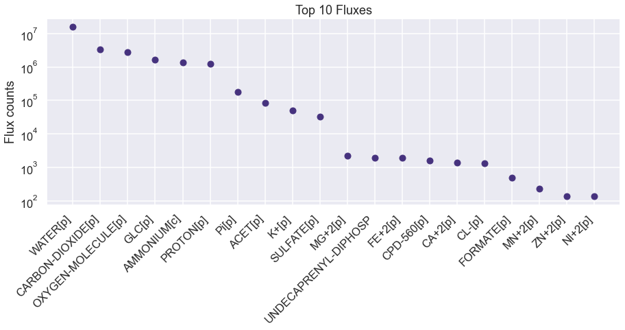
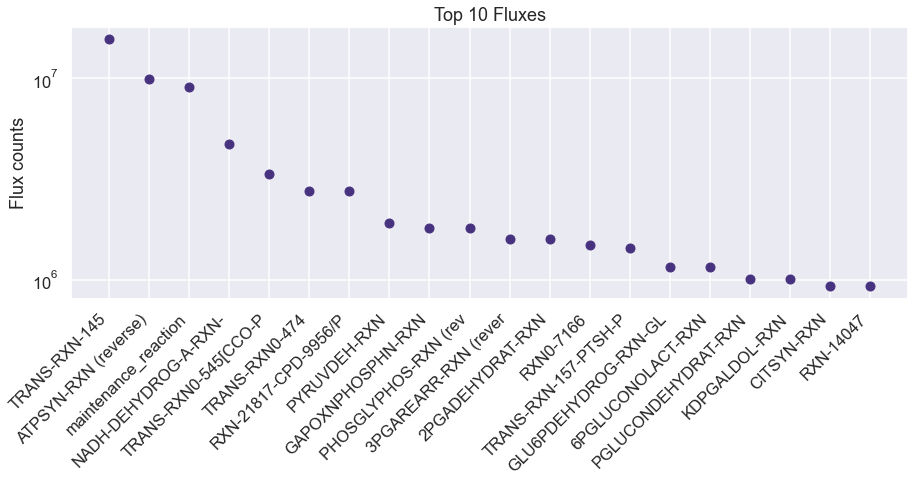
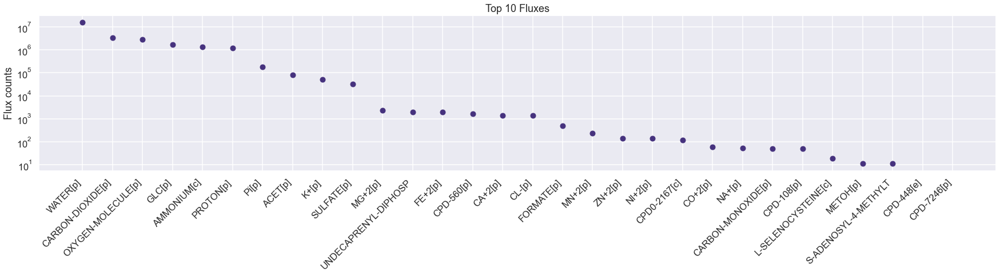
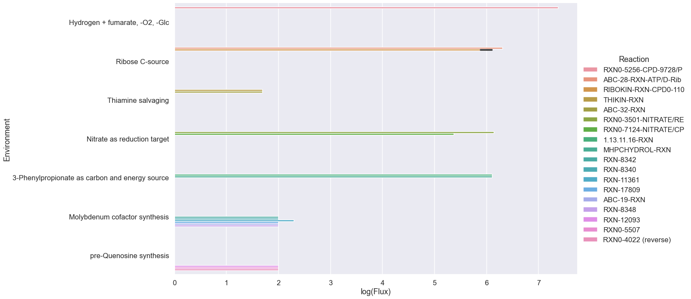
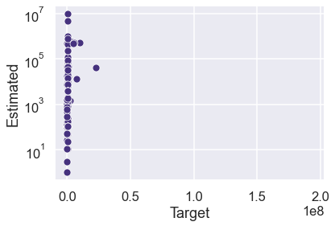

[74]:
import numpy as np
import seaborn as sns
import pandas as pd
import os
os.chdir(os.path.expanduser('~/vivarium-ecoli'))
import matplotlib.pyplot as plt
import dill
import requests
import xmltodict
from ecoli.processes.metabolism_redux import NetworkFlowModel, FlowResult, BAD_RXNS, FREE_RXNS
sns.set(style='darkgrid', palette='viridis', context='talk')
Import simulation output
Before running this, run a sim in ecoli/experiments/metabolism_redux_sim.py with -n 2 to generate a simulation output. This is necessary to replicate the simulation environment. Use the default .json config.
[75]:
time = '10'
date = '2023-04-24'
experiment = 'fba-redux'
entry = f'{experiment}_{time}_{date}'
folder = f'out/fbagd/{entry}/'
[76]:
output = np.load(folder + 'output.npy',allow_pickle='TRUE').item()
# output = np.load(r"out/geneRxnVerifData/output_glc.npy", allow_pickle=True, encoding='ASCII').tolist()
output = output['agents']['0']
fba = output['listeners']['fba_results']
mass = output['listeners']['mass']
bulk = pd.DataFrame(output['bulk'])
[77]:
f = open(folder + 'agent_steps.pkl', 'rb')
agent = dill.load(f)
f.close()
[78]:
kind = 'ecoli-metabolism-redux'
if kind == 'ecoli-metabolism-redux':
metabolism = agent['ecoli-metabolism-redux']
stoichiometry = metabolism.stoichiometry
stoichiometric_matrix_dict = {item["reaction id"]: item["stoichiometry"] for item in stoichiometry}
elif kind == 'ecoli-metabolism':
stoichiometry = agent['ecoli-metabolism'].model.stoichiometry
maintenance_reaction = agent['ecoli-metabolism'].model.maintenance_reaction
stoichiometry["maintenance_reaction"] = maintenance_reaction
# for rxn in BAD_RXNS:
# stoichiometric_matrix_dict.pop(rxn, None)
Pandas automatically understands dicts of dicts as matrices.
[79]:
sim_exchanges = pd.DataFrame(fba["estimated_exchange_dmdt"])
sim_exchanges = pd.DataFrame(sim_exchanges.loc[4, :].abs().sort_values(ascending=False))
sim_exchanges.head(10)
# plot the top 10 fluxes from sim_fluxes as a bar plot.
plt.figure(figsize=(15, 5))
plt.plot(sim_exchanges.head(20), 'o')
# shorten all xtick names to 10 characters
plt.xticks([i for i in range(20)], [i[:20] for i in sim_exchanges.index[:20]], rotation=45, ha= 'right')
# make xticks aligned to right left of bar
plt.yscale('log')
plt.ylabel('Flux counts')
plt.title('Top 10 Fluxes')
plt.show()

[80]:
sim_fluxes = pd.DataFrame(fba["estimated_fluxes"])
sim_fluxes = pd.DataFrame(sim_fluxes.loc[4, :].abs().sort_values(ascending=False))
# plot the top 10 fluxes from sim_fluxes as a bar plot.
plt.figure(figsize=(15, 5))
plt.plot(sim_fluxes.head(20), 'o')
# shorten all xtick names to 10 characters
plt.xticks([i for i in range(20)], [i[:20] for i in sim_fluxes.index[:20]], rotation=45, ha= 'right')
# make xticks aligned to right left of bar
plt.ylabel('Flux counts')
# log scale
plt.yscale('log')
plt.title('Top 10 Fluxes')
plt.show()

[81]:
sim_fluxes.head(20)
[81]:
| 4 | |
|---|---|
| TRANS-RXN-145 | 15675360.0 |
| ATPSYN-RXN (reverse) | 9936179.0 |
| maintenance_reaction | 9067240.0 |
| NADH-DEHYDROG-A-RXN-NADH/UBIQUINONE-8/PROTON//NAD/CPD-9956/PROTON.46. | 4744591.0 |
| TRANS-RXN0-545[CCO-PM-BAC-NEG]-CARBON-DIOXIDE//CARBON-DIOXIDE.47. (reverse) | 3364670.0 |
| TRANS-RXN0-474 | 2771827.0 |
| RXN-21817-CPD-9956/PROTON/OXYGEN-MOLECULE//UBIQUINONE-8/PROTON/WATER.59. | 2771749.0 |
| PYRUVDEH-RXN | 1910777.0 |
| GAPOXNPHOSPHN-RXN | 1813836.0 |
| PHOSGLYPHOS-RXN (reverse) | 1813828.0 |
| 3PGAREARR-RXN (reverse) | 1591241.0 |
| 2PGADEHYDRAT-RXN | 1591193.0 |
| RXN0-7166 | 1482753.0 |
| TRANS-RXN-157-PTSH-PHOSPHORYLATED/GLC//GLC-6-P/PTSH-MONOMER.46. | 1438691.0 |
| GLU6PDEHYDROG-RXN-GLC-6-P/NADP//D-6-P-GLUCONO-DELTA-LACTONE/NADPH/PROTON.55. | 1149193.0 |
| 6PGLUCONOLACT-RXN | 1149193.0 |
| PGLUCONDEHYDRAT-RXN | 1009534.0 |
| KDPGALDOL-RXN | 1009534.0 |
| CITSYN-RXN | 927632.0 |
| RXN-14047 | 926660.0 |
[82]:
sim_catalysts = pd.DataFrame(fba["reaction_catalyst_counts"])
sim_catalysts = pd.DataFrame(sim_catalysts.loc[4, :].abs().sort_values(ascending=False))
sim_catalysts
[82]:
| 4 | |
|---|---|
| RXN0-1741-MALTOSE//MALTOSE.17. | 40249 |
| RXN-15315 | 40223 |
| TRANS-RXN0-445-CHITOBIOSE//CHITOBIOSE.23. | 40223 |
| RXN0-0-N-ACETYLNEURAMINATE//N-ACETYLNEURAMINATE.41. | 40223 |
| RXN0-0-N-ACETYLNEURAMINATE//CPD0-1123.31. | 40223 |
| ... | ... |
| TRANS-RXN-100 | 0 |
| RXN-17726-CPD-3561/WATER//GALACTOSE/CPD-10723.36. | 0 |
| RXN-17726-CPD-3561/WATER//GALACTOSE/BETA-D-FRUCTOSE.42. | 0 |
| RXN-17726 | 0 |
| RXN-17786 (reverse) | 0 |
7503 rows × 1 columns
Test changing nutrient composition
[83]:
uptake = (fba["unconstrained_molecules"][3]).copy()
uptake_c = fba["constrained_molecules"]
uptake.extend(list(uptake_c.keys()))
uptake = set(uptake)
# addition = set(["CPD0-1074[c]"])
addition = set([
# "FRU[p]",
# "NITRATE[p]"
# 'THIAMINE[p]',
# 'HYDROGEN-MOLECULE[p]',
# 'FUM[p]'
])
removals = set([
# "GLC[p]",
# # 'AMMONIUM[c]',
# # 'WATER[p]'
# # 'Pi[p]',
# # 'SULFATE[p]'
# 'OXYGEN-MOLECULE[p]'
])
uptake = uptake | addition
uptake = uptake - removals
uptake
[83]:
{'AMMONIUM[c]',
'CA+2[p]',
'CARBON-DIOXIDE[p]',
'CL-[p]',
'CO+2[p]',
'FE+2[p]',
'GLC[p]',
'K+[p]',
'L-SELENOCYSTEINE[c]',
'MG+2[p]',
'MN+2[p]',
'NA+[p]',
'NI+2[p]',
'OXYGEN-MOLECULE[p]',
'Pi[p]',
'SULFATE[p]',
'WATER[p]',
'ZN+2[p]'}
Use NetworkFlowModel class to run model
[84]:
homeostatic = pd.DataFrame(fba["target_homeostatic_dmdt"]).loc[4, :]
exchanges = pd.DataFrame(fba["estimated_exchange_dmdt"]).loc[4, :]
maintenance = pd.DataFrame(fba["maintenance_target"]).at[4, 'maintenance_reaction']
kinetic = pd.DataFrame(fba["target_kinetic_fluxes"]).loc[4, :]
homeostatic
[84]:
2-3-DIHYDROXYBENZOATE[c] 73.0
2-KETOGLUTARATE[c] 186.0
2-PG[c] 49.0
2K-4CH3-PENTANOATE[c] 73.0
4-AMINO-BUTYRATE[c] 160.0
...
MN+2[p] 52.0
NA+[p] 52.0
OXYGEN-MOLECULE[p] 51.0
CA+2[p] 52.0
Pi[p] 52.0
Name: 4, Length: 171, dtype: float64
[85]:
model = NetworkFlowModel(reactions=stoichiometric_matrix_dict,
homeostatic_metabolites=metabolism.homeostatic_objective,
free_reactions=FREE_RXNS)
[86]:
model.set_up_exchanges(exchanges=metabolism.exchange_molecules, uptakes=metabolism.allowed_exchange_uptake)
[87]:
solution: FlowResult = model.solve(homeostatic_targets=dict(homeostatic),
maintenance_target=maintenance,
kinetic_targets=dict(kinetic),
reaction_catalyst_counts=sim_catalysts.to_dict()[4],
objective_weights={'secretion': 0.01, 'efficiency': 0.0001, 'kinetics': 0.000001},
upper_flux_bound=100000000)
[88]:
cur_exchanges = pd.Series(solution.exchanges).abs().sort_values(ascending=False)
# plot the top 10 fluxes from sim_fluxes as a bar plot.
plt.figure(figsize=(30, 5))
plt.plot(cur_exchanges.head(30), 'o')
# shorten all xtick names to 10 characters
plt.xticks([i for i in range(30)], [i[:20] for i in cur_exchanges.index[:30]], rotation=45, ha= 'right')
# make xticks aligned to right left of bar
plt.yscale('log')
plt.ylabel('Flux counts')
plt.title('Top 10 Fluxes')
plt.show()

[89]:
cur_fluxes = pd.Series(solution.velocities).abs().sort_values(ascending=False)
# plot the top 10 fluxes from sim_fluxes as a bar plot.
plt.figure(figsize=(15, 5))
plt.plot(cur_fluxes.head(20), 'o')
# shorten all xtick names to 10 characters
plt.xticks([i for i in range(20)], [i[:20] for i in cur_fluxes.index[:20]], rotation=45, ha= 'right')
# make xticks aligned to right left of bar
plt.yscale('log')
plt.ylabel('Flux counts')
plt.title('Top 10 Fluxes')
plt.show()
Connect to EcoCyc to go from Genes -> Reactions
[90]:
s = requests.Session() # create session
# Post login credentials to session:
s.post('https://websvc.biocyc.org/credentials/login/', data={'email':'cellulararchitect@protonmail.com', 'password':'Cellman0451'})
[90]:
<Response [200]>
[91]:
{"G6245", "G7431", "G7452"}
[91]:
{'G6245', 'G7431', 'G7452'}
[92]:
condition_sets = {0: {"Environment": "Hydrogen + fumarate, -O2, -Glc",
"Genes": {"EG10468", "EG10469", "EG10470", "EG11799", "EG11800", "EG11801", "G7554"},
"Add": {"FUM[p]", 'HYDROGEN-MOLECULE[p]'},
"Remove": {"GLC[p]", "OXYGEN-MOLECULE[p]"},
},
1: {"Environment": "Ribose C-source",
"Genes": {"EG10814", "EG10815", "EG10816", "EG10818"},
"Add": {"D-Ribopyranose[p]"},
"Remove": {"GLC[p]"},
},
2: {"Environment": "Thiamine salvaging",
"Genes": {"EG11574", "G6566", "M007", "EG11573", "EG11572"},
"Add": {"THIAMINE[p]"},
"Remove": set(),
},
3: {"Environment": "Nitrate as reduction target",
"Genes": {"EG10638", "EG10639", "EG10640", "EG10644", "EG10647", "EG10648"},
"Add": {"NITRATE[p]"},
"Remove": {"OXYGEN-MOLECULE[p]"},
},
4: {"Environment": "3-Phenylpropionate as carbon and energy source",
"Genes": {"M010", "M011", "M012", "G6206"},
"Add": {"3-PHENYLPROPIONATE[p]"},
"Remove": {"GLC[p]"},
},
5: {"Environment": "Molybdenum cofactor synthesis",
"Genes": {"EG11595", "EG11666", "EG11597", "EG11598", "EG11829", "G7496", "EG10002", "EG10152",
"EG10153", "EG10154"},
"Add": {"CPD-3[p]"},
"Remove": set(),
"Demand": {"CPD-8123[c]"},
},
6: {"Environment": "pre-Quenosine synthesis",
"Genes": {"G6245", "G7431", "G7452"},
"Add": set(),
"Remove": set(),
"Demand": {"7-AMINOMETHYL-7-DEAZAGUANINE[c]"},
},
# 5: {"Genes": set(["EG10286", "EG10287", "EG10288", "EG10289",
# "EG10290", "EG10293", "EG10294", "EG10295",
# "EG10296", "EG10298", "EG10302", "EG10303",
# "EG10304", "EG10305", "EG10306", "G6414"]),
# "Add": set(),
# "Remove": set(),
# "Environment": "Proper metal (iron) uptake"}
}
condition_df = pd.DataFrame(condition_sets).T
condition_df["Reactions"] = [[np.nan]] * len(condition_df)
condition_df["Demand"] = condition_df["Demand"].fillna(False)
condition_df
[92]:
| Environment | Genes | Add | Remove | Demand | Reactions | |
|---|---|---|---|---|---|---|
| 0 | Hydrogen + fumarate, -O2, -Glc | {EG11799, G7554, EG10468, EG10470, EG11801, EG... | {HYDROGEN-MOLECULE[p], FUM[p]} | {OXYGEN-MOLECULE[p], GLC[p]} | False | [nan] |
| 1 | Ribose C-source | {EG10814, EG10818, EG10815, EG10816} | {D-Ribopyranose[p]} | {GLC[p]} | False | [nan] |
| 2 | Thiamine salvaging | {EG11572, EG11574, G6566, M007, EG11573} | {THIAMINE[p]} | {} | False | [nan] |
| 3 | Nitrate as reduction target | {EG10640, EG10638, EG10639, EG10647, EG10648, ... | {NITRATE[p]} | {OXYGEN-MOLECULE[p]} | False | [nan] |
| 4 | 3-Phenylpropionate as carbon and energy source | {M011, G6206, M010, M012} | {3-PHENYLPROPIONATE[p]} | {GLC[p]} | False | [nan] |
| 5 | Molybdenum cofactor synthesis | {EG11598, EG11666, EG10152, EG11597, EG11595, ... | {CPD-3[p]} | {} | {CPD-8123[c]} | [nan] |
| 6 | pre-Quenosine synthesis | {G6245, G7452, G7431} | {} | {} | {7-AMINOMETHYL-7-DEAZAGUANINE[c]} | [nan] |
[93]:
for i in range(len(condition_df.index)):
genes = condition_df.loc[i, "Genes"]
rxn_set = set()
for gene in genes:
function = "reactions-of-gene"
name = gene
req_str = f"https://websvc.biocyc.org/apixml?fn={function}&id=ECOLI:{name}&detail=none&fmt=json"
r = s.get(req_str)
o = xmltodict.parse(r.content)['ptools-xml']['Reaction']
if type(o) is dict:
o = [o]
for rxn in o:
if type(rxn) is not str: # no rxns
rxn_set.add(rxn['@frameid'])
else:
print(gene, rxn)
condition_df.at[i, "Reactions"] = rxn_set
[94]:
condition_df
[94]:
| Environment | Genes | Add | Remove | Demand | Reactions | |
|---|---|---|---|---|---|---|
| 0 | Hydrogen + fumarate, -O2, -Glc | {EG11799, G7554, EG10468, EG10470, EG11801, EG... | {HYDROGEN-MOLECULE[p], FUM[p]} | {OXYGEN-MOLECULE[p], GLC[p]} | False | {RXN0-7399, RXN0-5256, RXN-16420} |
| 1 | Ribose C-source | {EG10814, EG10818, EG10815, EG10816} | {D-Ribopyranose[p]} | {GLC[p]} | False | {ABC-28-RXN, RIBOKIN-RXN} |
| 2 | Thiamine salvaging | {EG11572, EG11574, G6566, M007, EG11573} | {THIAMINE[p]} | {} | False | {THIKIN-RXN, RXN0-7298, ABC-32-RXN, THIAZOLSYN... |
| 3 | Nitrate as reduction target | {EG10640, EG10638, EG10639, EG10647, EG10648, ... | {NITRATE[p]} | {OXYGEN-MOLECULE[p]} | False | {RXN-15119, RXN0-3501, RXN0-7124} |
| 4 | 3-Phenylpropionate as carbon and energy source | {M011, G6206, M010, M012} | {3-PHENYLPROPIONATE[p]} | {GLC[p]} | False | {TRANS-RXN0-457, 1.13.11.16-RXN, TRANS-RXN-61,... |
| 5 | Molybdenum cofactor synthesis | {EG11598, EG11666, EG10152, EG11597, EG11595, ... | {CPD-3[p]} | {} | {CPD-8123[c]} | {RXN-8342, RXN0-262, RXN0-6254, RXN-8340, RXN-... |
| 6 | pre-Quenosine synthesis | {G6245, G7452, G7431} | {} | {} | {7-AMINOMETHYL-7-DEAZAGUANINE[c]} | {RXN-12093, RXN0-5507, RXN0-4022} |
Quick and dirty loop (after init)
[95]:
results_df = pd.DataFrame(columns=["Environment", "Reaction", "Flux"])
for i in range(len(condition_df)):
condition_idx = i
uptake = (fba["unconstrained_molecules"][3]).copy()
uptake_c = fba["constrained_molecules"]
homeostatic = dict(pd.DataFrame(fba["target_homeostatic_dmdt"]).loc[4, :])
new_demand = condition_df.at[condition_idx, "Demand"]
if new_demand:
for met in new_demand:
homeostatic[met] = 100
uptake.extend(list(uptake_c.keys()))
uptake = set(uptake)
addition = condition_df.at[condition_idx, "Add"]
removals = condition_df.at[condition_idx, "Remove"]
uptake = uptake | addition
uptake = uptake - removals
model = NetworkFlowModel(reactions=stoichiometric_matrix_dict,
homeostatic_metabolites=homeostatic,
free_reactions=FREE_RXNS)
model.set_up_exchanges(exchanges=metabolism.exchange_molecules, uptakes=uptake)
solution: FlowResult = model.solve(homeostatic_targets=homeostatic,
maintenance_target=maintenance,
kinetic_targets=dict(kinetic),
reaction_catalyst_counts=sim_catalysts.to_dict()[4],
objective_weights={'secretion': 0.01, 'efficiency': 0.0001, 'kinetics': 0.000001},
upper_flux_bound=100000000)
# Check flux
fluxes = pd.DataFrame({model.rxns[i]: [solution.velocities[model.rxns[i]], stoichiometric_matrix_dict[model.rxns[i]]] for i in range(len(model.rxns))}).T
fluxes.columns = ["Flux", "Stoichiometry"]
relevant_rxns = condition_df.at[condition_idx, "Reactions"]
relevant_rxn_idx = []
for rxn in relevant_rxns:
relevant_rxn_idx.extend(list(np.where(fluxes.index.str.contains(rxn))[0] ))
relevant_fluxes = fluxes.iloc[relevant_rxn_idx, :]
relevant_nonzero_fluxes = relevant_fluxes[relevant_fluxes["Flux"] != 0].loc[:, "Flux"]
for j, k in enumerate(relevant_nonzero_fluxes.index):
results_df = results_df.append(pd.DataFrame([[condition_df.at[condition_idx, "Environment"],
relevant_nonzero_fluxes.index[j],
relevant_nonzero_fluxes[k]]], columns=["Environment", "Reaction", "Flux"]))
print(f"""finished {condition_df.at[condition_idx, "Environment"]}""")
finished Hydrogen + fumarate, -O2, -Glc
finished Ribose C-source
finished Thiamine salvaging
finished Nitrate as reduction target
finished 3-Phenylpropionate as carbon and energy source
finished Molybdenum cofactor synthesis
finished pre-Quenosine synthesis
[108]:
results_df["Reaction"] = results_df['Reaction'].str.slice(0,20)
results_df["log(Flux)"] = np.log10(results_df["Flux"])
results_df
[108]:
| Environment | Reaction | Flux | log(Flux) | |
|---|---|---|---|---|
| 0 | Hydrogen + fumarate, -O2, -Glc | RXN0-5256-CPD-9728/P | 2.367649e+07 | 7.374317 |
| 0 | Ribose C-source | ABC-28-RXN-ATP/D-Rib | 2.029540e+06 | 6.307398 |
| 0 | Ribose C-source | RIBOKIN-RXN-CPD0-110 | 1.264890e+06 | 6.102053 |
| 0 | Ribose C-source | RIBOKIN-RXN-CPD0-110 | 7.646495e+05 | 5.883462 |
| 0 | Thiamine salvaging | THIKIN-RXN | 4.900000e+01 | 1.690196 |
| 0 | Thiamine salvaging | ABC-32-RXN | 4.900000e+01 | 1.690196 |
| 0 | Nitrate as reduction target | RXN0-3501-NITRATE/RE | 1.405236e+06 | 6.147749 |
| 0 | Nitrate as reduction target | RXN0-7124-NITRATE/CP | 2.350110e+05 | 5.371088 |
| 0 | 3-Phenylpropionate as carbon and energy source | 1.13.11.16-RXN | 1.284798e+06 | 6.108835 |
| 0 | 3-Phenylpropionate as carbon and energy source | MHPCHYDROL-RXN | 1.284798e+06 | 6.108835 |
| 0 | Molybdenum cofactor synthesis | RXN-8342 | 1.000000e+02 | 2.000000 |
| 0 | Molybdenum cofactor synthesis | RXN-8340 | 1.000000e+02 | 2.000000 |
| 0 | Molybdenum cofactor synthesis | RXN-11361 | 2.000000e+02 | 2.301030 |
| 0 | Molybdenum cofactor synthesis | RXN-17809 | 1.000000e+02 | 2.000000 |
| 0 | Molybdenum cofactor synthesis | ABC-19-RXN | 1.000000e+02 | 2.000000 |
| 0 | Molybdenum cofactor synthesis | RXN-8348 | 1.000000e+02 | 2.000000 |
| 0 | pre-Quenosine synthesis | RXN-12093 | 1.000000e+02 | 2.000000 |
| 0 | pre-Quenosine synthesis | RXN0-5507 | 1.000000e+02 | 2.000000 |
| 0 | pre-Quenosine synthesis | RXN0-4022 (reverse) | 1.000000e+02 | 2.000000 |
[114]:
# for each environment, plot the fluxes of the reactions that are relevant to that environment
g = sns.catplot(y="Environment",hue="Reaction", x="log(Flux)", data=results_df, kind="bar", aspect=2, height=10, sharey=False)
g.savefig("notebooks/fbagd/figures/rxns_light_up.pdf")

Check kinetics
[71]:
uptake = (fba["unconstrained_molecules"][3]).copy()
uptake_c = fba["constrained_molecules"]
homeostatic = dict(pd.DataFrame(fba["target_homeostatic_dmdt"]).loc[4, :])
exchanges = pd.DataFrame(fba["estimated_exchange_dmdt"]).loc[4, :]
maintenance = pd.DataFrame(fba["maintenance_target"]).at[4, 'maintenance_reaction']
kinetic = dict(pd.DataFrame(fba["target_kinetic_fluxes"]).loc[4, :])
sim_fluxes = dict(pd.DataFrame(fba["estimated_fluxes"]).loc[4, :])
uptake.extend(list(uptake_c.keys()))
uptake = set(uptake)
[63]:
model = NetworkFlowModel(reactions=stoichiometric_matrix_dict,
homeostatic_metabolites=metabolism.homeostatic_objective,
free_reactions=FREE_RXNS)
model.set_up_exchanges(exchanges=metabolism.exchange_molecules, uptakes=metabolism.allowed_exchange_uptake)
solution: FlowResult = model.solve(homeostatic_targets=homeostatic,
maintenance_target=maintenance,
kinetic_targets=kinetic,
reaction_catalyst_counts=sim_catalysts.to_dict()[4],
objective_weights={'secretion': 0.01, 'efficiency': 0.0001, 'kinetics': 0.00001},
upper_flux_bound=100000000)
[64]:
solution.velocities
[64]:
{'1-ACYLGLYCEROL-3-P-ACYLTRANSFER-RXN': -0.0,
'1.1.1.127-RXN': -0.0,
'1.1.1.127-RXN (reverse)': -0.0,
'1.1.1.215-RXN (reverse)': -0.0,
'1.1.1.251-RXN': -0.0,
'1.1.1.251-RXN (reverse)': -0.0,
'1.1.1.271-RXN (reverse)': -0.0,
'1.1.1.274-RXN (reverse)': -0.0,
'1.1.1.283-RXN (reverse)': -0.0,
'1.1.1.39-RXN': -0.0,
'1.1.1.83-RXN': -0.0,
'1.11.1.15-RXN': -0.0,
'1.13.11.16-RXN': 0.0,
'1.3.1.9-RXN (reverse)': -0.0,
'1.5.1.20-RXN-5-METHYL-THF/NAD//METHYLENE-THF/NADH/PROTON.44.': -0.0,
'1.5.1.20-RXN-5-METHYL-THF/NAD//METHYLENE-THF/NADH/PROTON.44. (reverse)': 15408.0,
'1.5.1.20-RXN-CPD-1302/NAD//CPD-12996/NADH/PROTON.36.': -0.0,
'1.5.1.20-RXN-CPD-1302/NAD//CPD-12996/NADH/PROTON.36. (reverse)': 3621.999999999991,
'1.7.2.2-RXN-A-REDUCED-TORY-PROTEIN/NITRITE/PROTON//AMMONIUM/an-oxidized-TorY-protein/WATER.79.': -0.0,
'1.7.2.2-RXN-Cytochromes-C-Reduced/NITRITE/PROTON//AMMONIUM/Cytochromes-C-Oxidized/WATER.76.': 0.0,
'1.7.2.2-RXN-Cytochromes-C550-Red/NITRITE/PROTON//AMMONIUM/Cytochromes-C550-Ox/WATER.72.': 0.0,
'1.7.2.2-RXN-Cytochromes-C552-Red/NITRITE/PROTON//AMMONIUM/Cytochromes-C552-Ox/WATER.72.': 0.0,
'1.7.2.2-RXN-Cytochromes-C554-Red/NITRITE/PROTON//AMMONIUM/Cytochromes-C554-Ox/WATER.72.': 0.0,
'1.7.2.2-RXN-Cytochromes-CL-Red/NITRITE/PROTON//AMMONIUM/Cytochromes-CL-Ox/WATER.68.': -0.0,
'1.7.2.2-RXN-Cytochromes-c3-Reduced/NITRITE/PROTON//AMMONIUM/Cytochromes-c3-Oxidized/WATER.78.': 0.0,
'1.7.2.2-RXN-Reduced-NapC-proteins/NITRITE/PROTON//AMMONIUM/Oxidized-NapC-proteins/WATER.76.': -0.0,
'1.7.2.2-RXN-Reduced-cytochromes-c2/NITRITE/PROTON//AMMONIUM/Oxidized-cytochromes-c2/WATER.78.': -0.0,
'1.7.2.2-RXN-Reduced-cytochromes-c553/NITRITE/PROTON//AMMONIUM/Oxidized-cytochromes-c553/WATER.82.': 0.0,
'1.7.2.2-RXN-a-reduced-NrfB-protein/NITRITE/PROTON//AMMONIUM/an-oxidized-NrfB-protein/WATER.79.': -0.0,
'1.7.2.2-RXN-a-reduced-TorC-protein/NITRITE/PROTON//AMMONIUM/an-oxidized-TorC-protein/WATER.79.': -0.0,
'1.7.2.3-RXN (reverse)': -0.0,
'1.7.2.3-RXN-TRIMETHYLAMINE/Cytochromes-C550-Ox/WATER//TRIMETHYLAMINE-N-O/Cytochromes-C550-Red/PROTON.89. (reverse)': -0.0,
'1.7.2.3-RXN-TRIMETHYLAMINE/Cytochromes-C552-Ox/WATER//TRIMETHYLAMINE-N-O/Cytochromes-C552-Red/PROTON.89. (reverse)': -0.0,
'1.7.2.3-RXN-TRIMETHYLAMINE/Cytochromes-C554-Ox/WATER//TRIMETHYLAMINE-N-O/Cytochromes-C554-Red/PROTON.89. (reverse)': -0.0,
'1.7.2.3-RXN-TRIMETHYLAMINE/Cytochromes-CL-Ox/WATER//TRIMETHYLAMINE-N-O/Cytochromes-CL-Red/PROTON.85. (reverse)': -0.0,
'1.7.2.3-RXN-TRIMETHYLAMINE/Cytochromes-c3-Oxidized/WATER//TRIMETHYLAMINE-N-O/Cytochromes-c3-Reduced/PROTON.95. (reverse)': -0.0,
'1.7.2.3-RXN-TRIMETHYLAMINE/Oxidized-NapC-proteins/WATER//TRIMETHYLAMINE-N-O/Reduced-NapC-proteins/PROTON.93. (reverse)': -0.0,
'1.7.2.3-RXN-TRIMETHYLAMINE/Oxidized-cytochromes-c2/WATER//TRIMETHYLAMINE-N-O/Reduced-cytochromes-c2/PROTON.95. (reverse)': -0.0,
'1.7.2.3-RXN-TRIMETHYLAMINE/Oxidized-cytochromes-c553/WATER//TRIMETHYLAMINE-N-O/Reduced-cytochromes-c553/PROTON.99. (reverse)': -0.0,
'1.7.2.3-RXN-TRIMETHYLAMINE/an-oxidized-NrfB-protein/WATER//TRIMETHYLAMINE-N-O/a-reduced-NrfB-protein/PROTON.96. (reverse)': -0.0,
'1.8.1.4-RXN': -0.0,
'1.8.4.12-RXN (reverse)': -0.0,
'1.8.4.13-RXN (reverse)': -0.0,
'1.8.4.13-RXN-MET/Ox-thioredoxins-1/WATER//CPD-8989/Red-thioredoxins-1.57. (reverse)': -0.0,
'1.8.4.13-RXN-MET/Oxidized-CcmG-Proteins/WATER//CPD-8989/Reduced-CcmG-Proteins.65. (reverse)': -0.0,
'1.8.4.13-RXN-MET/Oxidized-CcmH-Proteins/WATER//CPD-8989/Reduced-CcmH-Proteins.65. (reverse)': -0.0,
'1.8.4.14-RXN (reverse)': -0.0,
'1.8.4.14-RXN-MET/Ox-thioredoxins-1/WATER//CPD-8990/Red-thioredoxins-1.57. (reverse)': -0.0,
'1.8.4.14-RXN-MET/Oxidized-CcmG-Proteins/WATER//CPD-8990/Reduced-CcmG-Proteins.65. (reverse)': -0.0,
'1.8.4.14-RXN-MET/Oxidized-CcmH-Proteins/WATER//CPD-8990/Reduced-CcmH-Proteins.65. (reverse)': -0.0,
'1.8.4.4-RXN': -0.0,
'1.8.4.8-RXN (reverse)': 33248.999999999985,
'1.8.4.8-RXN-3-5-ADP/SO3/Ox-thioredoxins-1/PROTON//PAPS/Red-thioredoxins-1.62. (reverse)': 0.0,
'1.8.4.8-RXN-3-5-ADP/SO3/Oxidized-CcmG-Proteins/PROTON//PAPS/Reduced-CcmG-Proteins.70. (reverse)': -0.0,
'1.8.4.8-RXN-3-5-ADP/SO3/Oxidized-CcmH-Proteins/PROTON//PAPS/Reduced-CcmH-Proteins.70. (reverse)': -0.0,
'1.97.1.4-A-RXN': -0.0,
'1PFRUCTPHOSN-RXN': -0.0,
'1TRANSKETO-RXN': -0.0,
'1TRANSKETO-RXN (reverse)': -0.0,
'1TRANSKETO-RXN-D-SEDOHEPTULOSE-7-P/GAP//CPD-15318/XYLULOSE-5-PHOSPHATE.56.': -0.0,
'1TRANSKETO-RXN-D-SEDOHEPTULOSE-7-P/GAP//CPD-15318/XYLULOSE-5-PHOSPHATE.56. (reverse)': 29081.500000000007,
'1TRANSKETO-RXN-D-SEDOHEPTULOSE-7-P/GAP//CPD-15895/XYLULOSE-5-PHOSPHATE.56.': -0.0,
'1TRANSKETO-RXN-D-SEDOHEPTULOSE-7-P/GAP//CPD-15895/XYLULOSE-5-PHOSPHATE.56. (reverse)': -0.0,
'1TRANSKETO-RXN-D-SEDOHEPTULOSE-7-P/GAP//CPD-16551/XYLULOSE-5-PHOSPHATE.56.': -0.0,
'1TRANSKETO-RXN-D-SEDOHEPTULOSE-7-P/GAP//CPD-16551/XYLULOSE-5-PHOSPHATE.56. (reverse)': -0.0,
'2-DEHYDROPANTOATE-REDUCT-RXN (reverse)': 1123.9999999999936,
'2-ISOPROPYLMALATESYN-RXN': 56298.00000000001,
'2-METHYLCITRATE-DEHYDRATASE-RXN': -0.0,
'2-METHYLCITRATE-SYNTHASE-RXN': 0.0,
'2-OCTAPRENYL-6-METHOXYPHENOL-HYDROX-RXN': 0.0,
'2-OCTAPRENYL-6-OHPHENOL-METHY-RXN': -0.0,
'2-OCTAPRENYL-METHOXY-BENZOQ-METH-RXN': -0.0,
'2-OCTAPRENYLPHENOL-HYDROX-RXN': -0.0,
'2-OXOPENT-4-ENOATE-HYDRATASE-RXN (reverse)': 0.0,
'2.1.1.34-RXN': -0.0,
'2.1.1.63-RXN': -0.0,
'2.1.1.72-RXN': 0.0,
'2.1.1.77-RXN': -0.0,
'2.1.1.79-RXN-S-ADENOSYLMETHIONINE/CPD-18361//CPD-18373/ADENOSYL-HOMO-CYS/PROTON.67.': -0.0,
'2.1.1.79-RXN-S-ADENOSYLMETHIONINE/CPD-18362//CPD-18406/ADENOSYL-HOMO-CYS/PROTON.67.': -0.0,
'2.1.1.79-RXN-S-ADENOSYLMETHIONINE/CPD-18367//CPD-18371/ADENOSYL-HOMO-CYS/PROTON.67.': -0.0,
'2.1.1.79-RXN-S-ADENOSYLMETHIONINE/CPD-18369//CPD-18372/ADENOSYL-HOMO-CYS/PROTON.67.': -0.0,
'2.1.1.79-RXN-S-ADENOSYLMETHIONINE/CPD-18392//CPD-18405/ADENOSYL-HOMO-CYS/PROTON.67.': -0.0,
'2.1.1.79-RXN-S-ADENOSYLMETHIONINE/CPD-18403//CPD-18404/ADENOSYL-HOMO-CYS/PROTON.67.': -0.0,
'2.3.1.118-RXN': -0.0,
'2.3.1.128-RXN': -0.0,
'2.3.1.157-RXN': 16348.0,
'2.3.1.179-RXN': 0.0,
'2.3.1.180-RXN': 72176.00000000006,
'2.3.1.41-RXN': -0.0,
'2.3.1.49-RXN': -0.0,
'2.4.1.230-RXN': 0.0,
'2.4.1.230-RXN (reverse)': -0.0,
'2.4.1.230-RXN-CPD-16569/Pi//ALPHA-GLUCOSE/CPD-448.36.': -0.0,
'2.4.1.230-RXN-CPD-16569/Pi//ALPHA-GLUCOSE/CPD-448.36. (reverse)': -0.0,
'2.4.1.230-RXN-CPD-16569/Pi//GLC/CPD-448.26.': -0.0,
'2.4.1.230-RXN-CPD-16569/Pi//GLC/CPD-448.26. (reverse)': -0.0,
'2.4.1.78-RXN': -0.0,
'2.5.1.19-RXN': 50278.00000000001,
'2.5.1.19-RXN (reverse)': -0.0,
'2.5.1.25-RXN': -0.0,
'2.5.1.64-RXN': 105.99999999999999,
'2.6.1.57-RXN': -0.0,
'2.6.1.57-RXN (reverse)': -0.0,
'2.6.1.82-RXN': -0.0,
'2.6.1.82-RXN (reverse)': 0.0,
'2.7.1.121-RXN': 0.0,
'2.7.1.148-RXN': 44595.0,
'2.7.10.1-RXN': -0.0,
'2.7.13.1-RXN': 0.0,
'2.7.13.2-RXN': -0.0,
'2.7.3.9-RXN': 0.0,
'2.7.7.1-RXN': 0.0,
'2.7.7.13-RXN': -0.0,
'2.7.7.60-RXN': 44595.0,
'2.7.7.61-RXN': -0.0,
'2.7.8.25-RXN': -0.0,
'2.7.9.3-RXN': -0.0,
'2.8.1.6-RXN': 11.0,
'2.9.1.1-RXN': -0.0,
'2OXOGLUTARATEDEH-RXN': 339106.1333333354,
'2OXOGLUTDECARB-RXN': -0.0,
'2PGADEHYDRAT-RXN': 1591203.4000000095,
'2PGADEHYDRAT-RXN (reverse)': -0.0,
'2TRANSKETO-RXN': -0.0,
'2TRANSKETO-RXN (reverse)': 29171.50000000001,
'3-CH3-2-OXOBUTANOATE-OH-CH3-XFER-RXN-CPD-12996/2-KETO-ISOVALERATE/WATER//2-DEHYDROPANTOATE/CPD-1301.63.': -0.0,
'3-CH3-2-OXOBUTANOATE-OH-CH3-XFER-RXN-CPD-12996/2-KETO-ISOVALERATE/WATER//2-DEHYDROPANTOATE/CPD-1301.63. (reverse)': -0.0,
'3-CH3-2-OXOBUTANOATE-OH-CH3-XFER-RXN-METHYLENE-THF/2-KETO-ISOVALERATE/WATER//2-DEHYDROPANTOATE/THF.62.': 1123.9999999999934,
'3-CH3-2-OXOBUTANOATE-OH-CH3-XFER-RXN-METHYLENE-THF/2-KETO-ISOVALERATE/WATER//2-DEHYDROPANTOATE/THF.62. (reverse)': -0.0,
'3-DEHYDROQUINATE-DEHYDRATASE-RXN': 50286.000000000015,
'3-DEHYDROQUINATE-DEHYDRATASE-RXN (reverse)': -0.0,
'3-DEHYDROQUINATE-SYNTHASE-RXN': 50286.000000000015,
'3-HYDROXBUTYRYL-COA-DEHYDRATASE-RXN': 0.0,
'3-HYDROXBUTYRYL-COA-DEHYDRATASE-RXN (reverse)': -0.0,
'3-HYDROXYDECANOYL-ACP-DEHYDR-RXN-POLYMER-INST-OH-ACYL-ACP-C0-H0//POLYMER-INST-TRANS-D2-ENOYL-ACP-C0-H0/WATER.76.': 72176.00000000006,
'3-HYDROXYDECANOYL-ACP-DEHYDR-RXN-POLYMER-INST-OH-ACYL-ACP-C12-H24//2-Hexadecenoyl-ACPs/WATER.60.': 60638.00000000001,
'3-HYDROXYDECANOYL-ACP-DEHYDR-RXN-POLYMER-INST-OH-ACYL-ACP-C4-H8//POLYMER-INST-TRANS-D2-ENOYL-ACP-C4-H8/WATER.76.': 72176.00000000003,
'3-HYDROXYDECANOYL-ACP-DEHYDR-RXN-R-3-hydroxyarachidoyl-ACPs//trans-delta2-arachidoyl-ACPs/WATER.63.': -0.0,
'3-HYDROXYDECANOYL-ACP-DEHYDR-RXN-R-3-hydroxystearoyl-ACPs//Octadec-2-enoyl-ACPs/WATER.53.': -0.0,
'3-ISOPROPYLMALDEHYDROG-RXN__3-ISOPROPYLMALDEHYDROG-CPLX': -0.0,
'3-ISOPROPYLMALDEHYDROG-RXN__G6986-MONOMER': -0.0,
'3-ISOPROPYLMALISOM-RXN': -0.0,
'3-ISOPROPYLMALISOM-RXN (reverse)': -0.0,
'3-OCTAPRENYL-4-OHBENZOATE-DECARBOX-RXN': -0.0,
'3-OXOACYL-ACP-REDUCT-RXN-Beta-hydroxydecanoyl-ACPs/NADP//POLYMER-INST-B-KETOACYL-ACP-C6-H12/NADPH/PROTON.80. (reverse)': 72176.00000000003,
'3-OXOACYL-ACP-REDUCT-RXN-POLYMER-INST-OH-ACYL-ACP-C0-H0/NADP//Acetoacetyl-ACPs/NADPH/PROTON.67. (reverse)': 72176.00000000006,
'3-OXOACYL-ACP-REDUCT-RXN-POLYMER-INST-OH-ACYL-ACP-C12-H24/NADP//3-oxo-palmitoyl-ACPs/NADPH/PROTON.73. (reverse)': 60638.00000000001,
'3-OXOACYL-ACP-REDUCT-RXN-POLYMER-INST-OH-ACYL-ACP-C4-H8/NADP//3-Oxo-octanoyl-ACPs/NADPH/PROTON.70. (reverse)': 72176.00000000003,
'3-OXOACYL-ACP-REDUCT-RXN-R-3-hydroxyarachidoyl-ACPs/NADP//3-oxo-arachidoyl-ACPs/NADPH/PROTON.68. (reverse)': -0.0,
'3-OXOACYL-ACP-REDUCT-RXN-R-3-hydroxystearoyl-ACPs/NADP//3-oxo-stearoyl-ACPs/NADPH/PROTON.64. (reverse)': -0.0,
'3-OXOACYL-ACP-SYNTH-BASE-RXN': -0.0,
'3-OXOACYL-ACP-SYNTH-RXN-MALONYL-ACP/Arachidoyl-ACPs/PROTON//ACP/3-oxo-behenoyl-ACPs/CARBON-DIOXIDE.75.': 0.0,
'3-OXOACYL-ACP-SYNTH-RXN-MALONYL-ACP/POLYMER-INST-Saturated-Fatty-Acyl-ACPs-C4-H8/PROTON//ACP/POLYMER-INST-B-KETOACYL-ACP-C6-H12/CARBON-DIOXIDE.119.': 72176.00000000003,
'3-OXOACYL-ACP-SYNTH-RXN-MALONYL-ACP/Palmitoyl-ACPs/PROTON//ACP/3-oxo-stearoyl-ACPs/CARBON-DIOXIDE.74.': -0.0,
'3-OXOACYL-ACP-SYNTH-RXN-MALONYL-ACP/Stearoyl-ACPs/PROTON//ACP/3-oxo-arachidoyl-ACPs/CARBON-DIOXIDE.75.': -0.0,
'3-PHOSPHOGLYCERATE-PHOSPHATASE-RXN': -0.0,
'3.1.3.16-RXN': -0.0,
'3.1.3.68-RXN[CCO-CYTOSOL]-2-DEOXY-D-GLUCOSE-6-PHOSPHATE/WATER//2-DEOXY-D-GLUCOSE/Pi.71.': 0.0,
'3.1.3.68-RXN[CCO-PERI-BAC]-2-DEOXY-D-GLUCOSE-6-PHOSPHATE/WATER//2-DEOXY-D-GLUCOSE/Pi.72.': -0.0,
'3.1.3.74-RXN[CCO-CYTOSOL]-PYRIDOXAL_PHOSPHATE/WATER//PYRIDOXAL/Pi.53.__EG11239-MONOMER': -0.0,
'3.1.3.74-RXN[CCO-CYTOSOL]-PYRIDOXAL_PHOSPHATE/WATER//PYRIDOXAL/Pi.53.__EG11470-MONOMER': -0.0,
'3.1.3.74-RXN[CCO-CYTOSOL]-PYRIDOXAL_PHOSPHATE/WATER//PYRIDOXAL/Pi.53.__G6246-MONOMER': -0.0,
'3.1.3.74-RXN[CCO-PERI-BAC]-PYRIDOXAL_PHOSPHATE/WATER//PYRIDOXAL/Pi.54.': -0.0,
'3.1.4.14-RXN': -0.0,
'3.1.4.14-RXN-Holo-AsbD-Proteins/WATER//PANTETHEINE-P/Apo-AsbD-Proteins/PROTON.65.': -0.0,
'3.2.1.17-RXN': -0.0,
'3.2.1.17-RXN-C6/WATER//C5/N-ACETYL-D-GLUCOSAMINE.36.': -0.0,
'3.2.1.17-RXN-Peptidoglycans/WATER//NAcMur-Peptide-Undecaprenols/N-ACETYL-D-GLUCOSAMINE.74.': -0.0,
'3.2.1.21-RXN': -0.0,
'3.2.1.21-RXN-Beta-D-glucosides/WATER//Non-Glucosylated-Glucose-Acceptors/ALPHA-GLUCOSE.74.': -0.0,
'3.2.1.21-RXN-Beta-D-glucosides/WATER//Non-Glucosylated-Glucose-Acceptors/GLC.64.': -0.0,
'3.2.1.52-RXN': -0.0,
'3.2.2.10-RXN-CMP/WATER//CPD-15318/CYTOSINE.30.': 0.0,
'3.2.2.10-RXN-CMP/WATER//CPD-15895/CYTOSINE.30.': -0.0,
'3.2.2.10-RXN-CMP/WATER//CPD-16551/CYTOSINE.30.': 0.0,
'3.2.2.10-RXN-CMP/WATER//RIBOSE-5P/CYTOSINE.30.': 4.999999999999999,
'3.2.2.10-RXN-UMP/WATER//CPD-15318/URACIL.28.': -0.0,
'3.2.2.10-RXN-UMP/WATER//CPD-15895/URACIL.28.': -0.0,
'3.2.2.10-RXN-UMP/WATER//CPD-16551/URACIL.28.': -0.0,
'3.2.2.10-RXN-UMP/WATER//RIBOSE-5P/URACIL.28.': -0.0,
'3.2.2.23-RXN': 0.0,
'3.4.11.1-RXN': -0.0,
'3.4.11.18-RXN': -0.0,
'3.4.11.2-RXN': -0.0,
'3.4.11.4-RXN': -0.0,
'3.4.11.9-RXN': -0.0,
'3.4.13.18-RXN-D-ALA-D-ALA/WATER//L-ALPHA-ALANINE.35.': -0.0,
'3.4.13.18-RXN-GLYCYLGLYCINE/WATER//GLY.25.': -0.0,
'3.4.13.21-RXN': -0.0,
'3.4.13.22-RXN': -0.0,
'3.4.13.9-RXN-CPD0-2649/WATER//PRO/MET.25.': -0.0,
'3.4.15.5-RXN': -0.0,
'3.4.17.8-RXN': -0.0,
'3.4.19.12-RXN': -0.0,
'3.4.21.102-RXN-General-Protein-Substrates/WATER//Peptides-holder/PROTON.57.': -0.0,
'3.4.21.107-RXN-General-Protein-Substrates/WATER//Peptides-holder/PROTON.57.': -0.0,
'3.4.21.53-RXN-General-Protein-Substrates/WATER//Peptides-holder/PROTON.57.': -0.0,
'3.4.21.92-RXN-General-Protein-Substrates/ATP/WATER//Peptides-holder/ADP/Pi/PROTON.68.': -0.0,
'3.4.24.55-RXN-General-Protein-Substrates/WATER//Peptides-holder/PROTON.57.': -0.0,
'3.5.1.88-RXN': -0.0,
'3.5.2.17-RXN': -0.0,
'3.6.1.41-RXN': -0.0,
'3.6.3.23-RXN-ACETYLMURAMYL-ALANYL-ISOGLUTAMINE/ATP/WATER//ACETYLMURAMYL-ALANYL-ISOGLUTAMINE/ADP/Pi/PROTON.93.': -0.0,
'3.6.3.23-RXN-ALA-GLY/ATP/WATER//ALA-GLY/ADP/Pi/PROTON.41.': -0.0,
'3.6.3.23-RXN-CARNOSINE/ATP/WATER//CARNOSINE/ADP/Pi/PROTON.45.': -0.0,
'3.6.3.23-RXN-CPD-10814/ATP/WATER//CPD-10814/ADP/Pi/PROTON.45.': -0.0,
'3.6.3.23-RXN-CPD-13390/ATP/WATER//CPD-13390/ADP/Pi/PROTON.45.': -0.0,
'3.6.3.23-RXN-CPD-13393/ATP/WATER//CPD-13393/ADP/Pi/PROTON.45.': -0.0,
'3.6.3.23-RXN-CPD-13394/ATP/WATER//CPD-13394/ADP/Pi/PROTON.45.': -0.0,
'3.6.3.23-RXN-CPD-13395/ATP/WATER//CPD-13395/ADP/Pi/PROTON.45.': -0.0,
'3.6.3.23-RXN-CPD-13397/ATP/WATER//CPD-13397/ADP/Pi/PROTON.45.': -0.0,
'3.6.3.23-RXN-CPD-13398/ATP/WATER//CPD-13398/ADP/Pi/PROTON.45.': -0.0,
'3.6.3.23-RXN-CPD-13401/ATP/WATER//CPD-13401/ADP/Pi/PROTON.45.': -0.0,
'3.6.3.23-RXN-CPD-13403/ATP/WATER//CPD-13403/ADP/Pi/PROTON.45.': -0.0,
'3.6.3.23-RXN-CPD-13404/ATP/WATER//CPD-13404/ADP/Pi/PROTON.45.': -0.0,
'3.6.3.23-RXN-CPD-13406/ATP/WATER//CPD-13406/ADP/Pi/PROTON.45.': -0.0,
'3.6.3.23-RXN-CPD-15384/ATP/WATER//CPD-15384/ADP/Pi/PROTON.45.': -0.0,
'3.6.3.23-RXN-CPD-20340/ATP/WATER//CPD-20340/ADP/Pi/PROTON.45.': -0.0,
'3.6.3.23-RXN-CPD-20746/ATP/WATER//CPD-20746/ADP/Pi/PROTON.45.': -0.0,
'3.6.3.23-RXN-CPD-20750/ATP/WATER//CPD-20750/ADP/Pi/PROTON.45.': -0.0,
'3.6.3.23-RXN-CPD-3569/ATP/WATER//CPD-3569/ADP/Pi/PROTON.43.': -0.0,
'3.6.3.23-RXN-CPD0-1082/ATP/WATER//CPD0-1082/ADP/Pi/PROTON.45.': -0.0,
'3.6.3.23-RXN-CPD0-1085/ATP/WATER//CPD0-1085/ADP/Pi/PROTON.45.': -0.0,
'3.6.3.23-RXN-CPD0-1445/ATP/WATER//CPD0-1445/ADP/Pi/PROTON.45.': -0.0,
'3.6.3.23-RXN-CPD0-1620/ATP/WATER//CPD0-1620/ADP/Pi/PROTON.45.': -0.0,
'3.6.3.23-RXN-CPD0-1906/ATP/WATER//CPD0-1906/ADP/Pi/PROTON.45.': -0.0,
'3.6.3.23-RXN-CPD0-1907/ATP/WATER//CPD0-1907/ADP/Pi/PROTON.45.': -0.0,
'3.6.3.23-RXN-CPD0-1908/ATP/WATER//CPD0-1908/ADP/Pi/PROTON.45.': -0.0,
'3.6.3.23-RXN-CPD0-1909/ATP/WATER//CPD0-1909/ADP/Pi/PROTON.45.': -0.0,
'3.6.3.23-RXN-CPD0-1910/ATP/WATER//CPD0-1910/ADP/Pi/PROTON.45.': -0.0,
'3.6.3.23-RXN-CPD0-1911/ATP/WATER//CPD0-1911/ADP/Pi/PROTON.45.': -0.0,
'3.6.3.23-RXN-CPD0-1913/ATP/WATER//CPD0-1913/ADP/Pi/PROTON.45.': -0.0,
'3.6.3.23-RXN-CPD0-1915/ATP/WATER//CPD0-1915/ADP/Pi/PROTON.45.': -0.0,
'3.6.3.23-RXN-CPD0-1944/ATP/WATER//CPD0-1944/ADP/Pi/PROTON.45.': -0.0,
'3.6.3.23-RXN-CPD0-1965/ATP/WATER//CPD0-1965/ADP/Pi/PROTON.45.': -0.0,
'3.6.3.23-RXN-CPD0-2056/ATP/WATER//CPD0-2056/ADP/Pi/PROTON.45.': -0.0,
'3.6.3.23-RXN-CPD0-2073/ATP/WATER//CPD0-2073/ADP/Pi/PROTON.45.': -0.0,
'3.6.3.23-RXN-CPD0-2190/ATP/WATER//CPD0-2190/ADP/Pi/PROTON.45.': -0.0,
'3.6.3.23-RXN-CPD0-2555/ATP/WATER//CPD0-2555/ADP/Pi/PROTON.45.': -0.0,
'3.6.3.23-RXN-CPD0-2649/ATP/WATER//CPD0-2649/ADP/Pi/PROTON.45.': -0.0,
'3.6.3.23-RXN-CPD0-2650/ATP/WATER//CPD0-2650/ADP/Pi/PROTON.45.': -0.0,
'3.6.3.23-RXN-CPD0-2651/ATP/WATER//CPD0-2651/ADP/Pi/PROTON.45.': -0.0,
'3.6.3.23-RXN-CYS-GLY/ATP/WATER//CYS-GLY/ADP/Pi/PROTON.41.': 0.0,
'3.6.3.23-RXN-D-ALA-D-ALA/ATP/WATER//D-ALA-D-ALA/ADP/Pi/PROTON.49.': -0.0,
'3.6.3.23-RXN-GLYCYLGLYCINE/ATP/WATER//GLYCYLGLYCINE/ADP/Pi/PROTON.53.': -0.0,
'3.6.3.23-RXN-L-ALA-GAMMA-D-GLU-DAP/ATP/WATER//L-ALA-GAMMA-D-GLU-DAP/ADP/Pi/PROTON.69.': -0.0,
'3.6.3.23-RXN-L-GAMMA-GLUTAMYLCYSTEINE/ATP/WATER//L-GAMMA-GLUTAMYLCYSTEINE/ADP/Pi/PROTON.75.': -0.0,
'3.6.3.39-RXN': -0.0,
'3.6.3.39-RXN-CPD-15238/ATP/WATER//CPD-15238/ADP/Pi/PROTON.45.': -0.0,
'3.6.3.39-RXN-CPD-15242/ATP/WATER//CPD-15242/ADP/Pi/PROTON.45.': -0.0,
'3.6.3.39-RXN-CPD-21352/ATP/WATER//CPD-21352/ADP/Pi/PROTON.45.': -0.0,
'3.6.3.39-RXN-CPD-21354/ATP/WATER//CPD-21354/ADP/Pi/PROTON.45.': -0.0,
'3.6.3.39-RXN-CPD-21356/ATP/WATER//CPD-21356/ADP/Pi/PROTON.45.': -0.0,
'3.6.3.39-RXN-CPD-21357/ATP/WATER//CPD-21357/ADP/Pi/PROTON.45.': -0.0,
'3.6.3.39-RXN-CPD-21359/ATP/WATER//CPD-21359/ADP/Pi/PROTON.45.': -0.0,
'3.6.3.39-RXN-CPD-22536/ATP/WATER//CPD-22536/ADP/Pi/PROTON.45.': -0.0,
'3.6.3.39-RXN-CPD0-1151/ATP/WATER//CPD0-1151/ADP/Pi/PROTON.45.': -0.0,
'3.6.3.39-RXN-CPD0-2249/ATP/WATER//CPD0-2249/ADP/Pi/PROTON.45.': -0.0,
'3.6.3.39-RXN-CPD0-2294/ATP/WATER//CPD0-2294/ADP/Pi/PROTON.45.': -0.0,
'3.6.3.39-RXN-CPD0-938/ATP/WATER//CPD0-938/ADP/Pi/PROTON.43.': -0.0,
'3.6.3.39-RXN-CPD0-939/ATP/WATER//CPD0-939/ADP/Pi/PROTON.43.': -0.0,
'3.6.3.39-RXN-KDO2-LIPID-A/ATP/WATER//KDO2-LIPID-A/ADP/Pi/PROTON.51.': -0.0,
'3.6.3.39-RXN-KDO2-LIPID-IVA/ATP/WATER//KDO2-LIPID-IVA/ADP/Pi/PROTON.55.': -0.0,
'3.6.3.53-RXN': -0.0,
'325-BISPHOSPHATE-NUCLEOTIDASE-RXN': 22692.99999999998,
'325-BISPHOSPHATE-NUCLEOTIDASE-RXN__EG10043-MONOMER': 10556.0,
'3PGAREARR-RXN': 0.0,
'3PGAREARR-RXN (reverse)': 1591252.4000000097,
'4-HYDROXYBUTYRATE-DEHYDROGENASE-RXN (reverse)': -0.0,
'4-NITROPHENYLPHOSPHATASE-RXN': -0.0,
'4-NITROPHENYLPHOSPHATASE-RXN__ALKAPHOSPHA-CPLX': -0.0,
'4.1.2.28-RXN': -0.0,
'4.1.2.28-RXN (reverse)': -0.0,
'4.2.1.58-RXN': -0.0,
'4.2.1.59-RXN': -0.0,
'4.2.1.61-RXN': -0.0,
'4.2.1.99-RXN': -0.0,
'4.2.1.99-RXN (reverse)': 0.0,
'4.2.99.18-RXN': -0.0,
'4.3.1.15-RXN': -0.0,
'4.3.1.17-RXN': -0.0,
'4OHBENZOATE-OCTAPRENYLTRANSFER-RXN': -0.0,
'5-FORMYL-THF-CYCLO-LIGASE-RXN-5-FORMYL-THF/ATP//5-10-METHENYL-THF/ADP/Pi.43.': -0.0,
'5-NUCLEOTID-RXN[CCO-CYTOSOL]-XANTHOSINE-5-PHOSPHATE/WATER//XANTHOSINE/Pi.57.': -0.0,
'5-NUCLEOTID-RXN[CCO-CYTOSOL]-XANTHOSINE-5-PHOSPHATE/WATER//XANTHOSINE/Pi.57.__EG11817-MONOMER': -0.0,
'5-NUCLEOTID-RXN[CCO-PERI-BAC]-XANTHOSINE-5-PHOSPHATE/WATER//XANTHOSINE/Pi.58.': -0.0,
'5-OXOPROLINASE-ATP-HYDROLYSING-RXN': 0.0,
'5.1.3.20-RXN': 7692.0,
'5.3.1.17-RXN': -0.0,
'5.3.1.17-RXN (reverse)': -0.0,
'5.3.3.14-RXN': -0.0,
'5.3.3.14-RXN (reverse)': -0.0,
'5.4.2.10-RXN': 0.0,
'5.4.2.10-RXN (reverse)': -0.0,
'5.4.2.10-RXN-CPD-13469//GLUCOSAMINE-1P.26.': 16347.999999999998,
'5.4.2.10-RXN-CPD-13469//GLUCOSAMINE-1P.26. (reverse)': -0.0,
'6-PHOSPHO-BETA-GLUCOSIDASE-RXN': -0.0,
'6-PHOSPHO-BETA-GLUCOSIDASE-RXN-CPD-15978/WATER//ALPHA-GLC-6-P/ALPHA-GLUCOSE.45.': -0.0,
'6-PHOSPHO-BETA-GLUCOSIDASE-RXN-CPD-15978/WATER//ALPHA-GLC-6-P/GLC.35.': -0.0,
'6-PHOSPHO-BETA-GLUCOSIDASE-RXN-CPD-15978/WATER//ALPHA-GLC-6-P/Glucopyranose.45.': -0.0,
'6-PHOSPHO-BETA-GLUCOSIDASE-RXN-CPD-15978/WATER//D-glucopyranose-6-phosphate/ALPHA-GLUCOSE.59.': -0.0,
'6-PHOSPHO-BETA-GLUCOSIDASE-RXN-CPD-15978/WATER//D-glucopyranose-6-phosphate/GLC.49.': -0.0,
'6-PHOSPHO-BETA-GLUCOSIDASE-RXN-CPD-15978/WATER//GLC-6-P/ALPHA-GLUCOSE.39.': -0.0,
'6-PHOSPHO-BETA-GLUCOSIDASE-RXN-CPD-15978/WATER//GLC-6-P/GLC.29.': -0.0,
'6-PHOSPHO-BETA-GLUCOSIDASE-RXN-CPD-15978/WATER//GLC-6-P/Glucopyranose.39.': -0.0,
'6-PHOSPHO-BETA-GLUCOSIDASE-RXN-CPD-507/WATER//ALPHA-GLC-6-P/ALPHA-GLUCOSE.43.': -0.0,
'6-PHOSPHO-BETA-GLUCOSIDASE-RXN-CPD-507/WATER//ALPHA-GLC-6-P/GLC.33.': -0.0,
'6-PHOSPHO-BETA-GLUCOSIDASE-RXN-CPD-507/WATER//ALPHA-GLC-6-P/Glucopyranose.43.': -0.0,
'6-PHOSPHO-BETA-GLUCOSIDASE-RXN-CPD-507/WATER//D-glucopyranose-6-phosphate/ALPHA-GLUCOSE.57.': -0.0,
'6-PHOSPHO-BETA-GLUCOSIDASE-RXN-CPD-507/WATER//D-glucopyranose-6-phosphate/GLC.47.': -0.0,
'6-PHOSPHO-BETA-GLUCOSIDASE-RXN-CPD-507/WATER//D-glucopyranose-6-phosphate/Glucopyranose.57.': -0.0,
'6-PHOSPHO-BETA-GLUCOSIDASE-RXN-CPD-507/WATER//GLC-6-P/ALPHA-GLUCOSE.37.': -0.0,
'6-PHOSPHO-BETA-GLUCOSIDASE-RXN-CPD-507/WATER//GLC-6-P/GLC.27.': -0.0,
'6-PHOSPHO-BETA-GLUCOSIDASE-RXN-CPD-507/WATER//GLC-6-P/Glucopyranose.37.': -0.0,
'6PFRUCTPHOS-RXN__6PFK-1-CPX': 400720.08333334816,
'6PFRUCTPHOS-RXN__6PFK-2-CPX': 33153.0,
'6PGLUCONOLACT-RXN': 1149154.2333333257,
'7-ALPHA-HYDROXYSTEROID-DEH-RXN': -0.0,
'ABC-10-RXN': -0.0,
'ABC-11-RXN-ATP/CPD0-2114/WATER//ADP/CPD0-2114/Pi/PROTON.45.': -0.0,
'ABC-11-RXN-ATP/CPD0-2241/WATER//ADP/CPD0-2241/Pi/PROTON.45.': -0.0,
'ABC-11-RXN-ATP/CPD0-621/WATER//ADP/CPD0-621/Pi/PROTON.43.': -0.0,
'ABC-12-RXN': -0.0,
'ABC-13-RXN': -0.0,
'ABC-14-RXN': -0.0,
'ABC-15-RXN': -0.0,
'ABC-16-RXN-MALTOSE/ATP/WATER//MALTOSE/ADP/Pi/PROTON.41.': -0.0,
'ABC-18-RXN': 0.0,
'ABC-18-RXN-ATP/ALPHA-D-GALACTOSE/WATER//ADP/ALPHA-D-GALACTOSE/Pi/PROTON.61.': -0.0,
'ABC-18-RXN-ATP/ALPHA-D-GALACTOSE/WATER//ADP/D-galactopyranose/Pi/PROTON.61.': -0.0,
'ABC-18-RXN-ATP/ALPHA-D-GALACTOSE/WATER//ADP/GALACTOSE/Pi/PROTON.53.': -0.0,
'ABC-18-RXN-ATP/D-galactopyranose/WATER//ADP/ALPHA-D-GALACTOSE/Pi/PROTON.61.': -0.0,
'ABC-18-RXN-ATP/D-galactopyranose/WATER//ADP/D-galactopyranose/Pi/PROTON.61.': 0.0,
'ABC-18-RXN-ATP/D-galactopyranose/WATER//ADP/GALACTOSE/Pi/PROTON.53.': -0.0,
'ABC-18-RXN-ATP/GALACTOSE/WATER//ADP/ALPHA-D-GALACTOSE/Pi/PROTON.53.': -0.0,
'ABC-18-RXN-ATP/GALACTOSE/WATER//ADP/D-galactopyranose/Pi/PROTON.53.': -0.0,
'ABC-18-RXN-ATP/GALACTOSE/WATER//ADP/GALACTOSE/Pi/PROTON.45.': -0.0,
'ABC-19-RXN': -0.0,
'ABC-2-RXN': 0.0,
'ABC-2-RXN-ATP/ARABINOSE/WATER//ADP/ARABINOSE/Pi/PROTON.45.': -0.0,
'ABC-2-RXN-ATP/ARABINOSE/WATER//ADP/CPD-12045/Pi/PROTON.45.': -0.0,
'ABC-2-RXN-ATP/ARABINOSE/WATER//ADP/CPD-12046/Pi/PROTON.45.': -0.0,
'ABC-2-RXN-ATP/ARABINOSE/WATER//ADP/CPD-15699/Pi/PROTON.45.': -0.0,
'ABC-2-RXN-ATP/ARABINOSE/WATER//ADP/L-ARABINOSE/Pi/PROTON.47.': -0.0,
'ABC-2-RXN-ATP/CPD-12045/WATER//ADP/ARABINOSE/Pi/PROTON.45.': -0.0,
'ABC-2-RXN-ATP/CPD-12045/WATER//ADP/CPD-12045/Pi/PROTON.45.': -0.0,
'ABC-2-RXN-ATP/CPD-12045/WATER//ADP/CPD-12046/Pi/PROTON.45.': -0.0,
'ABC-2-RXN-ATP/CPD-12045/WATER//ADP/CPD-15699/Pi/PROTON.45.': -0.0,
'ABC-2-RXN-ATP/CPD-12045/WATER//ADP/L-ARABINOSE/Pi/PROTON.47.': -0.0,
'ABC-2-RXN-ATP/CPD-12046/WATER//ADP/ARABINOSE/Pi/PROTON.45.': -0.0,
'ABC-2-RXN-ATP/CPD-12046/WATER//ADP/CPD-12045/Pi/PROTON.45.': -0.0,
'ABC-2-RXN-ATP/CPD-12046/WATER//ADP/CPD-12046/Pi/PROTON.45.': -0.0,
'ABC-2-RXN-ATP/CPD-12046/WATER//ADP/CPD-15699/Pi/PROTON.45.': -0.0,
'ABC-2-RXN-ATP/CPD-12046/WATER//ADP/L-ARABINOSE/Pi/PROTON.47.': -0.0,
'ABC-2-RXN-ATP/CPD-15699/WATER//ADP/ARABINOSE/Pi/PROTON.45.': -0.0,
'ABC-2-RXN-ATP/CPD-15699/WATER//ADP/CPD-12045/Pi/PROTON.45.': -0.0,
'ABC-2-RXN-ATP/CPD-15699/WATER//ADP/CPD-12046/Pi/PROTON.45.': -0.0,
'ABC-2-RXN-ATP/CPD-15699/WATER//ADP/CPD-15699/Pi/PROTON.45.': -0.0,
'ABC-2-RXN-ATP/CPD-15699/WATER//ADP/L-ARABINOSE/Pi/PROTON.47.': -0.0,
'ABC-2-RXN-ATP/L-ARABINOSE/WATER//ADP/ARABINOSE/Pi/PROTON.47.': -0.0,
'ABC-2-RXN-ATP/L-ARABINOSE/WATER//ADP/CPD-12045/Pi/PROTON.47.': -0.0,
'ABC-2-RXN-ATP/L-ARABINOSE/WATER//ADP/CPD-12046/Pi/PROTON.47.': -0.0,
'ABC-2-RXN-ATP/L-ARABINOSE/WATER//ADP/CPD-15699/Pi/PROTON.47.': -0.0,
'ABC-2-RXN-ATP/L-ARABINOSE/WATER//ADP/L-ARABINOSE/Pi/PROTON.49.': 0.0,
'ABC-20-RXN': -0.0,
'ABC-22-RXN': -0.0,
'ABC-22-RXN-ATP/ACETYLMURAMYL-ALANYL-ISOGLUTAMINE/WATER//ADP/ACETYLMURAMYL-ALANYL-ISOGLUTAMINE/Pi/PROTON.93.': -0.0,
'ABC-22-RXN-ATP/ALA-GLY/WATER//ADP/ALA-GLY/Pi/PROTON.41.': -0.0,
'ABC-22-RXN-ATP/CARNOSINE/WATER//ADP/CARNOSINE/Pi/PROTON.45.': -0.0,
'ABC-22-RXN-ATP/CPD-10814/WATER//ADP/CPD-10814/Pi/PROTON.45.': -0.0,
'ABC-22-RXN-ATP/CPD-12301/WATER//ADP/CPD-12301/Pi/PROTON.45.': -0.0,
'ABC-22-RXN-ATP/CPD-13390/WATER//ADP/CPD-13390/Pi/PROTON.45.': -0.0,
'ABC-22-RXN-ATP/CPD-13393/WATER//ADP/CPD-13393/Pi/PROTON.45.': -0.0,
'ABC-22-RXN-ATP/CPD-13394/WATER//ADP/CPD-13394/Pi/PROTON.45.': -0.0,
'ABC-22-RXN-ATP/CPD-13395/WATER//ADP/CPD-13395/Pi/PROTON.45.': -0.0,
'ABC-22-RXN-ATP/CPD-13397/WATER//ADP/CPD-13397/Pi/PROTON.45.': -0.0,
'ABC-22-RXN-ATP/CPD-13398/WATER//ADP/CPD-13398/Pi/PROTON.45.': -0.0,
'ABC-22-RXN-ATP/CPD-13401/WATER//ADP/CPD-13401/Pi/PROTON.45.': -0.0,
'ABC-22-RXN-ATP/CPD-13403/WATER//ADP/CPD-13403/Pi/PROTON.45.': -0.0,
'ABC-22-RXN-ATP/CPD-13404/WATER//ADP/CPD-13404/Pi/PROTON.45.': -0.0,
'ABC-22-RXN-ATP/CPD-13406/WATER//ADP/CPD-13406/Pi/PROTON.45.': -0.0,
'ABC-22-RXN-ATP/CPD-15384/WATER//ADP/CPD-15384/Pi/PROTON.45.': -0.0,
'ABC-22-RXN-ATP/CPD-19319/WATER//ADP/CPD-19319/Pi/PROTON.45.': -0.0,
'ABC-22-RXN-ATP/CPD-19353/WATER//ADP/CPD-19353/Pi/PROTON.45.': -0.0,
'ABC-22-RXN-ATP/CPD-20340/WATER//ADP/CPD-20340/Pi/PROTON.45.': -0.0,
'ABC-22-RXN-ATP/CPD-20746/WATER//ADP/CPD-20746/Pi/PROTON.45.': -0.0,
'ABC-22-RXN-ATP/CPD-20750/WATER//ADP/CPD-20750/Pi/PROTON.45.': -0.0,
'ABC-22-RXN-ATP/CPD-22802/WATER//ADP/CPD-22802/Pi/PROTON.45.': -0.0,
'ABC-22-RXN-ATP/CPD-22805/WATER//ADP/CPD-22805/Pi/PROTON.45.': -0.0,
'ABC-22-RXN-ATP/CPD-23504/WATER//ADP/CPD-23504/Pi/PROTON.45.': -0.0,
'ABC-22-RXN-ATP/CPD-3569/WATER//ADP/CPD-3569/Pi/PROTON.43.': -0.0,
'ABC-22-RXN-ATP/CPD0-1082/WATER//ADP/CPD0-1082/Pi/PROTON.45.': -0.0,
'ABC-22-RXN-ATP/CPD0-1085/WATER//ADP/CPD0-1085/Pi/PROTON.45.': -0.0,
'ABC-22-RXN-ATP/CPD0-1129/WATER//ADP/CPD0-1129/Pi/PROTON.45.': -0.0,
'ABC-22-RXN-ATP/CPD0-1445/WATER//ADP/CPD0-1445/Pi/PROTON.45.': -0.0,
'ABC-22-RXN-ATP/CPD0-1620/WATER//ADP/CPD0-1620/Pi/PROTON.45.': -0.0,
'ABC-22-RXN-ATP/CPD0-1906/WATER//ADP/CPD0-1906/Pi/PROTON.45.': -0.0,
'ABC-22-RXN-ATP/CPD0-1907/WATER//ADP/CPD0-1907/Pi/PROTON.45.': -0.0,
'ABC-22-RXN-ATP/CPD0-1908/WATER//ADP/CPD0-1908/Pi/PROTON.45.': -0.0,
'ABC-22-RXN-ATP/CPD0-1909/WATER//ADP/CPD0-1909/Pi/PROTON.45.': -0.0,
'ABC-22-RXN-ATP/CPD0-1910/WATER//ADP/CPD0-1910/Pi/PROTON.45.': -0.0,
'ABC-22-RXN-ATP/CPD0-1911/WATER//ADP/CPD0-1911/Pi/PROTON.45.': -0.0,
'ABC-22-RXN-ATP/CPD0-1913/WATER//ADP/CPD0-1913/Pi/PROTON.45.': -0.0,
'ABC-22-RXN-ATP/CPD0-1915/WATER//ADP/CPD0-1915/Pi/PROTON.45.': -0.0,
'ABC-22-RXN-ATP/CPD0-1944/WATER//ADP/CPD0-1944/Pi/PROTON.45.': -0.0,
'ABC-22-RXN-ATP/CPD0-1965/WATER//ADP/CPD0-1965/Pi/PROTON.45.': -0.0,
'ABC-22-RXN-ATP/CPD0-1966/WATER//ADP/CPD0-1966/Pi/PROTON.45.': -0.0,
'ABC-22-RXN-ATP/CPD0-2056/WATER//ADP/CPD0-2056/Pi/PROTON.45.': -0.0,
'ABC-22-RXN-ATP/CPD0-2073/WATER//ADP/CPD0-2073/Pi/PROTON.45.': -0.0,
'ABC-22-RXN-ATP/CPD0-2190/WATER//ADP/CPD0-2190/Pi/PROTON.45.': -0.0,
'ABC-22-RXN-ATP/CPD0-2555/WATER//ADP/CPD0-2555/Pi/PROTON.45.': -0.0,
'ABC-22-RXN-ATP/CPD0-2603/WATER//ADP/CPD0-2603/Pi/PROTON.45.': -0.0,
'ABC-22-RXN-ATP/CPD0-2649/WATER//ADP/CPD0-2649/Pi/PROTON.45.': -0.0,
'ABC-22-RXN-ATP/CPD0-2650/WATER//ADP/CPD0-2650/Pi/PROTON.45.': -0.0,
'ABC-22-RXN-ATP/CPD0-2651/WATER//ADP/CPD0-2651/Pi/PROTON.45.': -0.0,
'ABC-22-RXN-ATP/CYS-GLY/WATER//ADP/CYS-GLY/Pi/PROTON.41.': 0.0,
'ABC-22-RXN-ATP/D-ALA-D-ALA/WATER//ADP/D-ALA-D-ALA/Pi/PROTON.49.': -0.0,
'ABC-22-RXN-ATP/GLYCYLGLYCINE/WATER//ADP/GLYCYLGLYCINE/Pi/PROTON.53.': -0.0,
'ABC-22-RXN-ATP/L-ALA-GAMMA-D-GLU-DAP/WATER//ADP/L-ALA-GAMMA-D-GLU-DAP/Pi/PROTON.69.': -0.0,
'ABC-22-RXN-ATP/L-GAMMA-GLUTAMYLCYSTEINE/WATER//ADP/L-GAMMA-GLUTAMYLCYSTEINE/Pi/PROTON.75.': -0.0,
'ABC-23-RXN-ATP/CPD0-1068/WATER//ADP/CPD0-1068/Pi/PROTON.45.': 0.0,
'ABC-23-RXN-ATP/CPD0-1075/WATER//ADP/CPD0-1075/Pi/PROTON.45.': -0.0,
'ABC-23-RXN-ATP/CPD0-1076/WATER//ADP/CPD0-1076/Pi/PROTON.45.': -0.0,
'ABC-24-RXN': -0.0,
'ABC-25-RXN': -0.0,
'ABC-26-RXN': -0.0,
'ABC-27-RXN': -0.0,
'ABC-28-RXN': 0.0,
'ABC-28-RXN-ATP/CPD-15829/WATER//ADP/CPD-15829/Pi/PROTON.45.': -0.0,
'ABC-28-RXN-ATP/CPD-15829/WATER//ADP/CPD0-1110/Pi/PROTON.45.': -0.0,
'ABC-28-RXN-ATP/CPD-15829/WATER//ADP/D-Ribopyranose/Pi/PROTON.50.': -0.0,
'ABC-28-RXN-ATP/CPD0-1110/WATER//ADP/CPD-15829/Pi/PROTON.45.': -0.0,
'ABC-28-RXN-ATP/CPD0-1110/WATER//ADP/CPD0-1110/Pi/PROTON.45.': -0.0,
'ABC-28-RXN-ATP/CPD0-1110/WATER//ADP/D-Ribopyranose/Pi/PROTON.50.': -0.0,
'ABC-28-RXN-ATP/D-Ribopyranose/WATER//ADP/CPD-15829/Pi/PROTON.50.': -0.0,
'ABC-28-RXN-ATP/D-Ribopyranose/WATER//ADP/CPD0-1110/Pi/PROTON.50.': -0.0,
'ABC-28-RXN-ATP/D-Ribopyranose/WATER//ADP/D-Ribopyranose/Pi/PROTON.55.': 0.0,
'ABC-3-RXN': -0.0,
'ABC-32-RXN': -0.0,
'ABC-33-RXN': -0.0,
'ABC-33-RXN-ATP/BETA-D-XYLOSE/WATER//ADP/BETA-D-XYLOSE/Pi/PROTON.53.': -0.0,
'ABC-33-RXN-ATP/BETA-D-XYLOSE/WATER//ADP/CPD-15377/Pi/PROTON.49.': -0.0,
'ABC-33-RXN-ATP/BETA-D-XYLOSE/WATER//ADP/D-Xylose/Pi/PROTON.48.': -0.0,
'ABC-33-RXN-ATP/BETA-D-XYLOSE/WATER//ADP/XYLOSE/Pi/PROTON.46.': -0.0,
'ABC-33-RXN-ATP/CPD-15377/WATER//ADP/BETA-D-XYLOSE/Pi/PROTON.49.': -0.0,
'ABC-33-RXN-ATP/CPD-15377/WATER//ADP/CPD-15377/Pi/PROTON.45.': -0.0,
'ABC-33-RXN-ATP/CPD-15377/WATER//ADP/D-Xylose/Pi/PROTON.44.': -0.0,
'ABC-33-RXN-ATP/CPD-15377/WATER//ADP/XYLOSE/Pi/PROTON.42.': -0.0,
'ABC-33-RXN-ATP/D-Xylose/WATER//ADP/BETA-D-XYLOSE/Pi/PROTON.48.': -0.0,
'ABC-33-RXN-ATP/D-Xylose/WATER//ADP/CPD-15377/Pi/PROTON.44.': -0.0,
'ABC-33-RXN-ATP/D-Xylose/WATER//ADP/D-Xylose/Pi/PROTON.43.': -0.0,
'ABC-33-RXN-ATP/D-Xylose/WATER//ADP/XYLOSE/Pi/PROTON.41.': -0.0,
'ABC-33-RXN-ATP/XYLOSE/WATER//ADP/BETA-D-XYLOSE/Pi/PROTON.46.': -0.0,
'ABC-33-RXN-ATP/XYLOSE/WATER//ADP/CPD-15377/Pi/PROTON.42.': -0.0,
'ABC-33-RXN-ATP/XYLOSE/WATER//ADP/D-Xylose/Pi/PROTON.41.': -0.0,
'ABC-33-RXN-ATP/XYLOSE/WATER//ADP/XYLOSE/Pi/PROTON.39.': -0.0,
'ABC-34-RXN': -0.0,
'ABC-35-RXN': -0.0,
'ABC-36-RXN': -0.0,
'ABC-37-RXN': -0.0,
'ABC-4-RXN': -0.0,
'ABC-42-RXN-CPD-15629/ATP/WATER//CPD-15629/ADP/Pi/PROTON.45.': 0.0,
'ABC-5-RXN': -0.0,
'ABC-56-RXN-ATP/CPD-10246/WATER//CPD-10246/ADP/Pi/PROTON.45.': -0.0,
'ABC-56-RXN-ATP/CPD-10434/WATER//CPD-10434/ADP/Pi/PROTON.45.': 0.0,
'ABC-56-RXN-ATP/CPD-10435/WATER//CPD-10435/ADP/Pi/PROTON.45.': 0.0,
'ABC-56-RXN-ATP/CPD-11725/WATER//CPD-11725/ADP/Pi/PROTON.45.': -0.0,
'ABC-56-RXN-ATP/CPD-3744/WATER//CPD-3744/ADP/Pi/PROTON.43.': 0.0,
'ABC-56-RXN-ATP/CPD-3745/WATER//CPD-3745/ADP/Pi/PROTON.43.': 0.0,
'ABC-56-RXN-ATP/CPD-3746/WATER//CPD-3746/ADP/Pi/PROTON.43.': 0.0,
'ABC-56-RXN-ATP/CPD0-1958/WATER//CPD0-1958/ADP/Pi/PROTON.45.': -0.0,
'ABC-56-RXN-ATP/CPD0-2074/WATER//CPD0-2074/ADP/Pi/PROTON.45.': -0.0,
'ABC-56-RXN-ATP/CPD0-2075/WATER//CPD0-2075/ADP/Pi/PROTON.45.': -0.0,
'ABC-56-RXN-ATP/CPD0-2546/WATER//CPD0-2546/ADP/Pi/PROTON.45.': -0.0,
'ABC-56-RXN-ATP/CPD0-2547/WATER//CPD0-2547/ADP/Pi/PROTON.45.': 0.0,
'ABC-63-RXN': -0.0,
'ABC-64-RXN': -0.0,
'ABC-7-RXN': -0.0,
'ABC-70-RXN': -0.0,
'ABC-8-RXN': -0.0,
'ABC-8-RXN-ATP/ALA-GLY/WATER//ADP/ALA-GLY/Pi/PROTON.41.': -0.0,
'ABC-8-RXN-ATP/CARNOSINE/WATER//ADP/CARNOSINE/Pi/PROTON.45.': -0.0,
'ABC-8-RXN-ATP/CPD-10814/WATER//ADP/CPD-10814/Pi/PROTON.45.': -0.0,
'ABC-8-RXN-ATP/CPD-13390/WATER//ADP/CPD-13390/Pi/PROTON.45.': -0.0,
'ABC-8-RXN-ATP/CPD-13393/WATER//ADP/CPD-13393/Pi/PROTON.45.': -0.0,
'ABC-8-RXN-ATP/CPD-13394/WATER//ADP/CPD-13394/Pi/PROTON.45.': -0.0,
'ABC-8-RXN-ATP/CPD-13395/WATER//ADP/CPD-13395/Pi/PROTON.45.': -0.0,
'ABC-8-RXN-ATP/CPD-13397/WATER//ADP/CPD-13397/Pi/PROTON.45.': -0.0,
'ABC-8-RXN-ATP/CPD-13398/WATER//ADP/CPD-13398/Pi/PROTON.45.': -0.0,
'ABC-8-RXN-ATP/CPD-13401/WATER//ADP/CPD-13401/Pi/PROTON.45.': -0.0,
'ABC-8-RXN-ATP/CPD-13403/WATER//ADP/CPD-13403/Pi/PROTON.45.': -0.0,
'ABC-8-RXN-ATP/CPD-13404/WATER//ADP/CPD-13404/Pi/PROTON.45.': -0.0,
'ABC-8-RXN-ATP/CPD-13406/WATER//ADP/CPD-13406/Pi/PROTON.45.': -0.0,
'ABC-8-RXN-ATP/CPD-20746/WATER//ADP/CPD-20746/Pi/PROTON.45.': -0.0,
'ABC-8-RXN-ATP/CPD-3569/WATER//ADP/CPD-3569/Pi/PROTON.43.': -0.0,
'ABC-8-RXN-ATP/CPD0-1445/WATER//ADP/CPD0-1445/Pi/PROTON.45.': -0.0,
'ABC-8-RXN-ATP/CPD0-1906/WATER//ADP/CPD0-1906/Pi/PROTON.45.': -0.0,
'ABC-8-RXN-ATP/CPD0-1907/WATER//ADP/CPD0-1907/Pi/PROTON.45.': -0.0,
'ABC-8-RXN-ATP/CPD0-1908/WATER//ADP/CPD0-1908/Pi/PROTON.45.': -0.0,
'ABC-8-RXN-ATP/CPD0-1909/WATER//ADP/CPD0-1909/Pi/PROTON.45.': -0.0,
'ABC-8-RXN-ATP/CPD0-1910/WATER//ADP/CPD0-1910/Pi/PROTON.45.': -0.0,
'ABC-8-RXN-ATP/CPD0-1911/WATER//ADP/CPD0-1911/Pi/PROTON.45.': -0.0,
'ABC-8-RXN-ATP/CPD0-1913/WATER//ADP/CPD0-1913/Pi/PROTON.45.': -0.0,
'ABC-8-RXN-ATP/CPD0-1915/WATER//ADP/CPD0-1915/Pi/PROTON.45.': -0.0,
'ABC-8-RXN-ATP/CPD0-1944/WATER//ADP/CPD0-1944/Pi/PROTON.45.': -0.0,
'ABC-8-RXN-ATP/CPD0-2073/WATER//ADP/CPD0-2073/Pi/PROTON.45.': -0.0,
'ABC-8-RXN-ATP/CPD0-2190/WATER//ADP/CPD0-2190/Pi/PROTON.45.': -0.0,
'ABC-8-RXN-ATP/CPD0-2555/WATER//ADP/CPD0-2555/Pi/PROTON.45.': -0.0,
'ABC-8-RXN-ATP/CPD0-2649/WATER//ADP/CPD0-2649/Pi/PROTON.45.': -0.0,
'ABC-8-RXN-ATP/CYS-GLY/WATER//ADP/CYS-GLY/Pi/PROTON.41.': 0.0,
'ABC-8-RXN-ATP/D-ALA-D-ALA/WATER//ADP/D-ALA-D-ALA/Pi/PROTON.49.': -0.0,
'ABC-8-RXN-ATP/GLYCYLGLYCINE/WATER//ADP/GLYCYLGLYCINE/Pi/PROTON.53.': -0.0,
'ABC-8-RXN-ATP/L-GAMMA-GLUTAMYLCYSTEINE/WATER//ADP/L-GAMMA-GLUTAMYLCYSTEINE/Pi/PROTON.75.': -0.0,
'ABC-9-RXN': 0.0,
'ACECOATRANS-RXN-BUTYRYL-COA/ACET//BUTYRIC_ACID/ACETYL-COA.42.': -0.0,
'ACECOATRANS-RXN-CPD-10267/ACET//CPD-3617/ACETYL-COA.36.': -0.0,
'ACECOATRANS-RXN-CPD-196/ACET//CPD-195/ACETYL-COA.33.': 0.0,
'ACECOATRANS-RXN-HEXANOYL-COA/ACET//HEXANOATE/ACETYL-COA.40.': 0.0,
'ACECOATRANS-RXN-LAUROYLCOA-CPD/ACET//DODECANOATE/ACETYL-COA.44.': 0.0,
'ACECOATRANS-RXN-PALMITYL-COA/ACET//PALMITATE/ACETYL-COA.40.': -0.0,
'ACECOATRANS-RXN-PROPIONYL-COA/ACET//PROPIONATE/ACETYL-COA.42.': -0.0,
'ACECOATRANS-RXN-STEAROYL-COA/ACET//STEARIC_ACID/ACETYL-COA.43.': 0.0,
'ACECOATRANS-RXN-TETRADECANOYL-COA/ACET//CPD-7836/ACETYL-COA.44.': -0.0,
'ACETALD-DEHYDROG-RXN': -0.0,
'ACETALD-DEHYDROG-RXN (reverse)': -0.0,
'ACETALD-DEHYDROG-RXN__MHPF-MONOMER': -0.0,
'ACETATE--COA-LIGASE-RXN': -0.0,
'ACETATEKIN-RXN': -0.0,
'ACETATEKIN-RXN (reverse)': -0.0,
'ACETOACETYL-COA-TRANSFER-RXN': -0.0,
'ACETOACETYL-COA-TRANSFER-RXN (reverse)': -0.0,
'ACETOLACTREDUCTOISOM-RXN (reverse)': 111910.0,
'ACETOLACTSYN-RXN': 24455.999999999996,
'ACETOLACTSYN-RXN__ACETOLACTSYNI-CPLX': 87454.00000000001,
'ACETOLACTSYN-RXN__ACETOLACTSYNII-CPLX': -0.0,
'ACETOOHBUTREDUCTOISOM-RXN (reverse)': 39207.0,
'ACETOOHBUTSYN-RXN': 39207.0,
'ACETOOHBUTSYN-RXN__ACETOLACTSYNII-CPLX': -0.0,
'ACETYL-COA-ACETYLTRANSFER-RXN': 11.000000000000002,
'ACETYL-COA-ACETYLTRANSFER-RXN (reverse)': -0.0,
'ACETYLESTERASE-RXN-ETHYLACETATE/WATER//ETOH/ACET/PROTON.37.': -0.0,
'ACETYLGLUTKIN-RXN': 46375.99999999999,
'ACETYLORNDEACET-RXN': 46353.0,
'ACETYLORNTRANSAM-RXN (reverse)': 46376.0,
'ACID-PHOSPHATASE-RXN': -0.0,
'ACNEULY-RXN': -0.0,
'ACNEULY-RXN (reverse)': -0.0,
'ACNEULY-RXN-CPD0-1122//N-ACETYL-D-MANNOSAMINE/PYRUVATE.43.': -0.0,
'ACNEULY-RXN-CPD0-1122//N-ACETYL-D-MANNOSAMINE/PYRUVATE.43. (reverse)': -0.0,
'ACNEULY-RXN-CPD0-1122//N-acetyl-D-mannosamine/PYRUVATE.43.': -0.0,
'ACNEULY-RXN-CPD0-1122//N-acetyl-D-mannosamine/PYRUVATE.43. (reverse)': -0.0,
'ACNEULY-RXN-CPD0-1123//N-acetyl-D-mannosamine/PYRUVATE.43.': -0.0,
'ACNEULY-RXN-CPD0-1123//N-acetyl-D-mannosamine/PYRUVATE.43. (reverse)': -0.0,
'ACNEULY-RXN-N-ACETYLNEURAMINATE//N-ACETYL-D-MANNOSAMINE/PYRUVATE.53.': -0.0,
'ACNEULY-RXN-N-ACETYLNEURAMINATE//N-ACETYL-D-MANNOSAMINE/PYRUVATE.53. (reverse)': 0.0,
'ACONITATE-DELTA-ISOMERASE-RXN': 0.0,
'ACONITATE-DELTA-ISOMERASE-RXN (reverse)': -0.0,
'ACONITATEDEHYDR-RXN': 6.999999999999999,
'ACONITATEDEHYDR-RXN (reverse)': -0.0,
'ACONITATEHYDR-RXN': -0.0,
'ACONITATEHYDR-RXN (reverse)': -0.0,
'ACP-S-ACETYLTRANSFER-RXN': -0.0,
'ACP-S-ACETYLTRANSFER-RXN (reverse)': -0.0,
'ACSERLY-RXN': 33248.99999999998,
'ACYL-COA-HYDROLASE-RXN': -0.0,
'ACYLCOADEHYDROG-RXN-CPD-9965/ETF-Oxidized/PROTON//POLYMER-INST-TRANS-D2-ENOYL-COA-C16-H32/ETF-Reduced.82.': -0.0,
'ACYLCOADEHYDROG-RXN-LAUROYLCOA-CPD/ETF-Oxidized/PROTON//CPD-7222/ETF-Reduced.57.': -0.0,
'ACYLCOADEHYDROG-RXN-PALMITYL-COA/ETF-Oxidized/PROTON//CPD0-2117/ETF-Reduced.56.': -0.0,
'ACYLCOADEHYDROG-RXN-STEAROYL-COA/ETF-Oxidized/PROTON//CPD-10262/ETF-Reduced.56.': -0.0,
'ACYLCOADEHYDROG-RXN-TETRADECANOYL-COA/ETF-Oxidized/PROTON//CPD-15568/ETF-Reduced.61.': -0.0,
'ACYLCOASYN-RXN-BUTYRIC_ACID/CO-A/ATP//BUTYRYL-COA/PPI/AMP.43.': -0.0,
'ACYLCOASYN-RXN-BUTYRIC_ACID/CO-A/ATP//BUTYRYL-COA/PPI/AMP.43.__ACYLCOASYN-CPLX': -0.0,
'ACYLCOASYN-RXN-CPD-195/CO-A/ATP//CPD-196/PPI/AMP.34.': -0.0,
'ACYLCOASYN-RXN-CPD-195/CO-A/ATP//CPD-196/PPI/AMP.34.__ACYLCOASYN-CPLX': -0.0,
'ACYLCOASYN-RXN-CPD-3617/CO-A/ATP//CPD-10267/PPI/AMP.37.': -0.0,
'ACYLCOASYN-RXN-CPD-3617/CO-A/ATP//CPD-10267/PPI/AMP.37.__ACYLCOASYN-CPLX': -0.0,
'ACYLCOASYN-RXN-CPD-7836/CO-A/ATP//TETRADECANOYL-COA/PPI/AMP.45.': -0.0,
'ACYLCOASYN-RXN-CPD-7836/CO-A/ATP//TETRADECANOYL-COA/PPI/AMP.45.__ACYLCOASYN-CPLX': -0.0,
'ACYLCOASYN-RXN-DODECANOATE/CO-A/ATP//LAUROYLCOA-CPD/PPI/AMP.45.': -0.0,
'ACYLCOASYN-RXN-DODECANOATE/CO-A/ATP//LAUROYLCOA-CPD/PPI/AMP.45.__ACYLCOASYN-CPLX': -0.0,
'ACYLCOASYN-RXN-HEXANOATE/CO-A/ATP//HEXANOYL-COA/PPI/AMP.41.': -0.0,
'ACYLCOASYN-RXN-HEXANOATE/CO-A/ATP//HEXANOYL-COA/PPI/AMP.41.__ACYLCOASYN-CPLX': -0.0,
'ACYLCOASYN-RXN-PALMITATE/CO-A/ATP//PALMITYL-COA/PPI/AMP.41.': -0.0,
'ACYLCOASYN-RXN-PALMITATE/CO-A/ATP//PALMITYL-COA/PPI/AMP.41.__ACYLCOASYN-CPLX': -0.0,
'ACYLCOASYN-RXN-POLYMER-INST-CPD66-39-C16-H32/CO-A/ATP//CPD-9965/PPI/AMP.57.': -0.0,
'ACYLCOASYN-RXN-POLYMER-INST-CPD66-39-C16-H32/CO-A/ATP//CPD-9965/PPI/AMP.57.__ACYLCOASYN-CPLX': -0.0,
'ACYLCOASYN-RXN-STEARIC_ACID/CO-A/ATP//STEAROYL-COA/PPI/AMP.44.': -0.0,
'ACYLCOASYN-RXN-STEARIC_ACID/CO-A/ATP//STEAROYL-COA/PPI/AMP.44.__ACYLCOASYN-CPLX': -0.0,
'ACYLGPEACYLTRANS-RXN': -0.0,
'ACYLGPEACYLTRANS-RXN (reverse)': -0.0,
'ACYLPHOSPHATASE-RXN-ACETYL-P/WATER//ACET/Pi/PROTON.31.': -0.0,
'ADCLY-RXN': 101.00000000000003,
'ADDALT-RXN': -0.0,
'ADENINE-DEAMINASE-RXN': 1.0000000000000002,
'ADENODEAMIN-RXN': -0.0,
'ADENOSINE-NUCLEOSIDASE-RXN': -0.0,
'ADENOSYLHOMOCYSTEINE-NUCLEOSIDASE-RXN': 172.00000000000003,
'ADENPHOSPHOR-RXN': -0.0,
'ADENPHOSPHOR-RXN (reverse)': -0.0,
'ADENPHOSPHOR-RXN__DEOD-CPLX': -0.0,
'ADENPRIBOSYLTRAN-RXN (reverse)': 1907.0,
'ADENYL-KIN-RXN': 275017.0000000083,
'ADENYL-KIN-RXN (reverse)': -0.0,
'ADENYLATECYC-RXN': -0.0,
'ADENYLOSUCCINATE-SYNTHASE-RXN': 36151.00000000397,
'ADENYLYLSULFKIN-RXN': 33248.999999999985,
'ADOMET-DMK-METHYLTRANSFER-RXN': 53.0,
'ADPREDUCT-RXN (reverse)': -0.0,
'ADPREDUCT-RXN-DADP/Ox-thioredoxins-1/WATER//ADP/Red-thioredoxins-1.53. (reverse)': -0.0,
'ADPREDUCT-RXN-DADP/Oxidized-CcmG-Proteins/WATER//ADP/Reduced-CcmG-Proteins.61. (reverse)': 4.000000000000001,
'ADPREDUCT-RXN-DADP/Oxidized-CcmH-Proteins/WATER//ADP/Reduced-CcmH-Proteins.61. (reverse)': -0.0,
'AGMATIN-RXN': 0.0,
'AICARSYN-RXN': 43802.00000000398,
'AICARTRANSFORM-RXN-10-FORMYL-THF/AICAR//THF/PHOSPHORIBOSYL-FORMAMIDO-CARBOXAMIDE.62.': 57044.00000000398,
'AICARTRANSFORM-RXN-10-FORMYL-THF/AICAR//THF/PHOSPHORIBOSYL-FORMAMIDO-CARBOXAMIDE.62. (reverse)': -0.0,
'AIRS-RXN': 43851.00000000398,
'AKBLIG-RXN': -0.0,
'AKBLIG-RXN (reverse)': -0.0,
'ALANINE-AMINOTRANSFERASE-RXN': -0.0,
'ALANINE-AMINOTRANSFERASE-RXN (reverse)': 81309.0,
'ALARACECAT-RXN': -0.0,
'ALARACECAT-RXN (reverse)': -0.0,
'ALARACECAT-RXN__CPLX0-8202': 7045.0,
'ALARACECAT-RXN__CPLX0-8202 (reverse)': -0.0,
'ALCOHOL-DEHYDROG-GENERIC-RXN-CPD-7867/NAD//CPD-7880/NADH/PROTON.35.': -0.0,
'ALCOHOL-DEHYDROG-GENERIC-RXN-CPD-7867/NAD//CPD-7880/NADH/PROTON.35. (reverse)': -0.0,
'ALCOHOL-DEHYDROG-GENERIC-RXN-GERANIOL/NAD//GERANIAL/NADH/PROTON.35.': -0.0,
'ALCOHOL-DEHYDROG-GENERIC-RXN-GERANIOL/NAD//GERANIAL/NADH/PROTON.35. (reverse)': -0.0,
'ALCOHOL-DEHYDROG-GENERIC-RXN-OCTANOL/NAD//CPD-371/NADH/PROTON.33.': -0.0,
'ALCOHOL-DEHYDROG-GENERIC-RXN-OCTANOL/NAD//CPD-371/NADH/PROTON.33. (reverse)': -0.0,
'ALCOHOL-DEHYDROG-GENERIC-RXN-PROPANOL/NAD//CPD-665/NADH/PROTON.34.': -0.0,
'ALCOHOL-DEHYDROG-GENERIC-RXN-PROPANOL/NAD//CPD-665/NADH/PROTON.34. (reverse)': -0.0,
'ALCOHOL-DEHYDROG-RXN': -0.0,
'ALCOHOL-DEHYDROG-RXN (reverse)': -0.0,
'ALCOHOL-DEHYDROG-RXN__CPLX0-8015': 0.0,
'ALCOHOL-DEHYDROG-RXN__CPLX0-8015 (reverse)': -0.0,
'ALDEHYDE-DEHYDROGENASE-NADP+-RXN': -0.0,
'ALDOSE-1-EPIMERASE-RXN': -0.0,
'ALDOSE-1-EPIMERASE-RXN (reverse)': -0.0,
'ALDOSE1EPIM-RXN': -0.0,
'ALDOSE1EPIM-RXN (reverse)': -0.0,
'ALKAPHOSPHA-RXN': -0.0,
'ALLANTOATE-DEIMINASE-RXN': -0.0,
'ALLANTOINASE-RXN': -0.0,
'ALLOSE-KINASE-RXN': 0.0,
'ALPHAGALACTOSID-RXN': -0.0,
'ALPHAGALACTOSID-RXN-MELIBIOSE/WATER//ALPHA-D-GALACTOSE/ALPHA-GLUCOSE.49.': -0.0,
'ALPHAGALACTOSID-RXN-MELIBIOSE/WATER//ALPHA-D-GALACTOSE/GLC.39.': -0.0,
'ALPHAGALACTOSID-RXN-MELIBIOSE/WATER//ALPHA-D-GALACTOSE/Glucopyranose.49.': -0.0,
'ALPHAGALACTOSID-RXN-MELIBIOSE/WATER//D-galactopyranose/ALPHA-GLUCOSE.49.': -0.0,
'ALPHAGALACTOSID-RXN-MELIBIOSE/WATER//D-galactopyranose/GLC.39.': -0.0,
'ALPHAGALACTOSID-RXN-MELIBIOSE/WATER//GALACTOSE/ALPHA-GLUCOSE.41.': -0.0,
'ALPHAGALACTOSID-RXN-MELIBIOSE/WATER//GALACTOSE/GLC.31.': -0.0,
'ALPHAGALACTOSID-RXN-MELIBIOSE/WATER//GALACTOSE/Glucopyranose.41.': -0.0,
'ALTRO-OXIDOREDUCT-RXN': -0.0,
'ALTRO-OXIDOREDUCT-RXN (reverse)': -0.0,
'ALTRODEHYDRAT-RXN': -0.0,
'AMACETOXID-RXN': -0.0,
'AMINEOXID-RXN': -0.0,
'AMINEPHEN-RXN': 0.0,
'AMINOBUTDEHYDROG-RXN': -0.0,
'AMINOBUTDEHYDROG-RXN__CPLX0-3641': -0.0,
'AMINOCYL-TRNA-HYDROLASE-RXN': -0.0,
'AMINOCYL-TRNA-HYDROLASE-RXN__EG10785-MONOMER': -0.0,
'AMP-DEPHOSPHORYLATION-RXN[CCO-CYTOSOL]-AMP/WATER//ADENOSINE/Pi.37.': -0.0,
'AMP-DEPHOSPHORYLATION-RXN[CCO-PERI-BAC]-AMP/WATER//ADENOSINE/Pi.38.': -0.0,
'AMP-DEPHOSPHORYLATION-RXN[CCO-PERI-BAC]-AMP/WATER//ADENOSINE/Pi.38.__APHA-CPLX': -0.0,
'AMP-NUCLEOSID-RXN': -0.0,
'AMP-NUCLEOSID-RXN-AMP/WATER//CPD-15318/ADENINE.29.': -0.0,
'AMP-NUCLEOSID-RXN-AMP/WATER//CPD-16551/ADENINE.29.': -0.0,
'AMPSYN-RXN': 36151.00000000397,
'AMYLOMALT-RXN': -0.0,
'AMYLOMALT-RXN (reverse)': -0.0,
'AMYLOMALT-RXN-MALTOTETRAOSE/ALPHA-GLUCOSE//MALTOTRIOSE/MALTOSE.49.': -0.0,
'AMYLOMALT-RXN-MALTOTETRAOSE/ALPHA-GLUCOSE//MALTOTRIOSE/MALTOSE.49. (reverse)': -0.0,
'AMYLOMALT-RXN-MALTOTETRAOSE/GLC//MALTOTRIOSE/MALTOSE.39.': -0.0,
'AMYLOMALT-RXN-MALTOTETRAOSE/GLC//MALTOTRIOSE/MALTOSE.39. (reverse)': -0.0,
'ANTHRANSYN-RXN': 6469.0,
'ARABISOM-RXN': 0.0,
'ARABISOM-RXN (reverse)': -0.0,
'ARABISOM-RXN-ARABINOSE//L-RIBULOSE.22.': -0.0,
'ARABISOM-RXN-ARABINOSE//L-RIBULOSE.22. (reverse)': -0.0,
'ARCBTRANS-RXN': -0.0,
'ARGDECARBOX-RXN[CCO-CYTOSOL]-ARG/PROTON//CARBON-DIOXIDE/AGMATHINE.50.': -0.0,
'ARGDECARBOX-RXN[CCO-PERI-BAC]-ARG/PROTON//CARBON-DIOXIDE/AGMATHINE.51.': -0.0,
'ARGININE-N-SUCCINYLTRANSFERASE-RXN': -0.0,
'ARGSUCCINLYA-RXN': 36237.0,
'ARGSUCCINLYA-RXN (reverse)': -0.0,
'ARGSUCCINSYN-RXN': 36330.0,
'ASNSYNA-RXN': 28364.0,
'ASNSYNA-RXN__ASNSYNB-CPLX': 1527.0000000000002,
'ASNSYNB-RXN': -0.0,
'ASPAMINOTRANS-RXN': 573564.1333333313,
'ASPAMINOTRANS-RXN (reverse)': -0.0,
'ASPARAGHYD-RXN[CCO-CYTOSOL]-ASN/WATER//L-ASPARTATE/AMMONIUM.45.': -0.0,
'ASPARAGHYD-RXN[CCO-PERI-BAC]-ASN/WATER//L-ASPARTATE/AMMONIUM.46.': -0.0,
'ASPARTASE-RXN': -0.0,
'ASPARTASE-RXN (reverse)': 872128.1333333395,
'ASPARTATE-SEMIALDEHYDE-DEHYDROGENASE-RXN': -0.0,
'ASPARTATE-SEMIALDEHYDE-DEHYDROGENASE-RXN (reverse)': 67263.99999999999,
'ASPARTATEKIN-RXN': -0.0,
'ASPARTATEKIN-RXN__ASPKINIHOMOSERDEHYDROGI-CPLX': 67263.99999999999,
'ASPCARBTRANS-RXN': 42247.000000000015,
'ASPDECARBOX-RXN': 1123.9999999999936,
'ATOC-RXN': -0.0,
'ATP-PYROPHOSPHATASE-RXN': -0.0,
'ATPASE-RXN': -0.0,
'ATPPHOSPHORIBOSYLTRANS-RXN': -0.0,
'ATPPHOSPHORIBOSYLTRANS-RXN (reverse)': 13242.0,
'ATPSYN-RXN': -0.0,
'ATPSYN-RXN (reverse)': 9936132.466666711,
'BADH-RXN': 0.0,
'BAER-RXN': -0.0,
'BAES-RXN': -0.0,
'BARA-RXN': -0.0,
'BASR-RXN': -0.0,
'BASS-RXN': -0.0,
'BETA-GLUCURONID-RXN': -0.0,
'BETA-LACTAMASE-RXN[CCO-PERI-BAC]-Beta-Lactams/WATER//CPD-8550/PROTON.50.': -0.0,
'BETA-PHOSPHOGLUCOMUTASE-RXN': -0.0,
'BETA-PHOSPHOGLUCOMUTASE-RXN (reverse)': -0.0,
'BETAGALACTOSID-RXN': 0.0,
'BETAGALACTOSID-RXN-Alpha-lactose/WATER//GALACTOSE/ALPHA-GLUCOSE.45.': -0.0,
'BETAGALACTOSID-RXN-Alpha-lactose/WATER//GALACTOSE/GLC.35.': -0.0,
'BETAGALACTOSID-RXN-Alpha-lactose/WATER//GALACTOSE/Glucopyranose.45.': -0.0,
'BETAGALACTOSID-RXN-CPD-15972/WATER//GALACTOSE/ALPHA-GLUCOSE.41.': 0.0,
'BETAGALACTOSID-RXN-CPD-15972/WATER//GALACTOSE/GLC.31.': 0.0,
'BIOTIN-CARBOXYL-RXN': 491822.00000000023,
'BIOTINLIG-RXN': -0.0,
'BIS5-ADENOSYL-TRIPHOSPHATASE-RXN': -0.0,
'BRANCHED-CHAINAMINOTRANSFERILEU-RXN': -0.0,
'BRANCHED-CHAINAMINOTRANSFERILEU-RXN (reverse)': 39207.0,
'BRANCHED-CHAINAMINOTRANSFERLEU-RXN': -0.0,
'BRANCHED-CHAINAMINOTRANSFERLEU-RXN (reverse)': 56224.99999999999,
'BRANCHED-CHAINAMINOTRANSFERLEU-RXN__BRANCHED-CHAINAMINOTRANSFER-CPLX': -0.0,
'BRANCHED-CHAINAMINOTRANSFERVAL-RXN': -0.0,
'BRANCHED-CHAINAMINOTRANSFERVAL-RXN (reverse)': 54487.99999999999,
'BTUR2-RXN': -0.0,
'BUTYRYL-COA-DEHYDROGENASE-RXN': 0.0,
'BUTYRYL-COA-DEHYDROGENASE-RXN (reverse)': -0.0,
'CARBOXYLATE-REDUCTASE-RXN': -0.0,
'CARBOXYLESTERASE-RXN': -0.0,
'CARBPSYN-RXN': -0.0,
'CARDIOLIPSYN-RXN-CPD-18362//CPD-18374/GLYCEROL.30.': -0.0,
'CARDIOLIPSYN-RXN-CPD-18373//CPD-18375/GLYCEROL.30.': 0.0,
'CARDIOLIPSYN-RXN-CPD-8260//CPD-12824/GLYCEROL.29.': 1472.0000000000002,
'CARNDETRU-RXN': -0.0,
'CARNDETRU-RXN (reverse)': -0.0,
'CATAL-RXN': -0.0,
'CATAL-RXN__CPLX0-1683': 24.499999999999996,
'CATAL-RXN__HYDROPEROXIDI-CPLX': -0.0,
'CDPDIGLYPYPHOSPHA-RXN-CPD-12814/WATER//CPD0-1423/CMP/PROTON.38.': -0.0,
'CDPDIGLYPYPHOSPHA-RXN-CPD-12815/WATER//CPD0-1422/CMP/PROTON.38.': -0.0,
'CDPDIGLYPYPHOSPHA-RXN-CPD-18355/WATER//CPD-18353/CMP/PROTON.38.': -0.0,
'CDPDIGLYPYPHOSPHA-RXN-CPD-18356/WATER//CPD-18352/CMP/PROTON.38.': 0.0,
'CDPDIGLYPYPHOSPHA-RXN-CPD-18357/WATER//CPD-18351/CMP/PROTON.38.': -0.0,
'CDPDIGLYPYPHOSPHA-RXN-CPD-18358/WATER//CPD-18350/CMP/PROTON.38.': 0.0,
'CDPDIGLYPYPHOSPHA-RXN-CPD-18387/WATER//CPD-18380/CMP/PROTON.38.': 0.0,
'CDPDIGLYPYPHOSPHA-RXN-CPD-18388/WATER//CPD0-1425/CMP/PROTON.38.': 0.0,
'CDPDIGLYPYPHOSPHA-RXN-CPD-18391/WATER//CPD-18390/CMP/PROTON.38.': 0.0,
'CDPDIGLYSYN-RXN-CTP/CPD-18350/PROTON//CPD-18358/PPI.36.': -0.0,
'CDPDIGLYSYN-RXN-CTP/CPD-18351/PROTON//CPD-18357/PPI.36.': -0.0,
'CDPDIGLYSYN-RXN-CTP/CPD-18352/PROTON//CPD-18356/PPI.36.': -0.0,
'CDPDIGLYSYN-RXN-CTP/CPD-18353/PROTON//CPD-18355/PPI.36.': 0.0,
'CDPDIGLYSYN-RXN-CTP/CPD-18380/PROTON//CPD-18387/PPI.36.': -0.0,
'CDPDIGLYSYN-RXN-CTP/CPD-18390/PROTON//CPD-18391/PPI.36.': -0.0,
'CDPDIGLYSYN-RXN-CTP/CPD0-1422/PROTON//CPD-12815/PPI.36.': 30319.000000000007,
'CDPDIGLYSYN-RXN-CTP/CPD0-1423/PROTON//CPD-12814/PPI.36.': -0.0,
'CDPDIGLYSYN-RXN-CTP/CPD0-1425/PROTON//CPD-18388/PPI.36.': -0.0,
'CDPKIN-RXN': 87615.99999999999,
'CDPREDUCT-RXN (reverse)': -0.0,
'CDPREDUCT-RXN-DCDP/Ox-thioredoxins-1/WATER//CDP/Red-thioredoxins-1.53. (reverse)': 0.0,
'CDPREDUCT-RXN-DCDP/Oxidized-CcmG-Proteins/WATER//CDP/Reduced-CcmG-Proteins.61. (reverse)': 0.0,
'CDPREDUCT-RXN-DCDP/Oxidized-CcmH-Proteins/WATER//CDP/Reduced-CcmH-Proteins.61. (reverse)': 0.0,
'CHD-RXN': 0.0,
'CHD-RXN (reverse)': -0.0,
'CHEBDEAMID-RXN': -0.0,
'CHEBDEP-RXN': -0.0,
'CHEBTAPD-RXN': -0.0,
'CHEBTARD-RXN': -0.0,
'CHEBTRGD-RXN': -0.0,
'CHEBTSRD-RXN': -0.0,
'CHER-RXN': -0.0,
'CHERTAPM-RXN': -0.0,
'CHERTARM-RXN': -0.0,
'CHERTRGM-RXN': -0.0,
'CHERTSRM-RXN': -0.0,
'CHEYDEPHOS-RXN': -0.0,
'CHORISMATE-SYNTHASE-RXN': 50278.00000000001,
'CHORISMATEMUT-RXN__CHORISMUTPREPHENDEHYDRAT-CPLX': 43286.99999999999,
'CHORISMATEMUT-RXN__CHORISMUTPREPHENDEHYDROG-CPLX': -0.0,
'CHORPYRLY-RXN': 27.0,
'CITC-RXN': 0.0,
'CITLY-RXN': -0.0,
'CITRATE-PRO-3S-LYASE-THIOLESTERASE-RXN': -0.0,
'CITRYLY-RXN': -0.0,
'CITSYN-RXN': 927630.1333333316,
'CITTRANS-RXN': -0.0,
'COBALADENOSYLTRANS-RXN': -0.0,
'COBALAMIN5PSYN-RXN': -0.0,
'COBINAMIDEKIN-RXN': -0.0,
'COBINPGUANYLYLTRANS-RXN': -0.0,
'CPM-KDOSYNTH-RXN': 3846.0,
'CPXA-RXN': -0.0,
'CPXR-RXN': -0.0,
'CREB-RXN': -0.0,
'CREC-RXN': -0.0,
'CROBETREDUCT-RXN (reverse)': -0.0,
'CTPSYN-RXN': -0.0,
'CYSTATHIONINE-BETA-LYASE-RXN': 19052.999999999993,
'CYSTEINE-AMINOTRANSFERASE-RXN': -0.0,
'CYSTEINE-AMINOTRANSFERASE-RXN (reverse)': -0.0,
'CYT-ACC-RXN': -0.0,
'CYTD-RED-RXN': -0.0,
'CYTD-RED-RXN-Cytochromes-B561-Red/Cytochromes-D-Oxidized//Cytochromes-B561-Ox/Cytochromes-D-Reduced.87.': -0.0,
'CYTD-RED-RXN-FERROCYTOCHROME-B5/Cytochromes-D-Oxidized//FERRICYTOCHROME-B5/Cytochromes-D-Reduced.84.': -0.0,
'CYTDEAM-RXN': -0.0,
'CYTIDEAM-RXN': -0.0,
'CYTIDEAM2-RXN': -0.0,
'CYTIDINEKIN-RXN': -0.0,
'CYTIKIN-RXN': -0.0,
'D--TARTRATE-DEHYDRATASE-RXN': -0.0,
'D--TARTRATE-DEHYDRATASE-RXN (reverse)': -0.0,
'D-PPENTOMUT-RXN': -0.0,
'D-PPENTOMUT-RXN (reverse)': 2.000000000000001,
'DADPKIN-RXN': -0.0,
'DAHPSYN-RXN__AROF-CPLX': -0.0,
'DAHPSYN-RXN__AROG-CPLX': -0.0,
'DAHPSYN-RXN__AROH-CPLX': 50286.000000000015,
'DALADALALIG-RXN__DALADALALIGA-MONOMER': 249.00000000000034,
'DALADALALIG-RXN__DALADALALIGB-CPLX': 3769.0,
'DALADEHYDROG-RXN-D-ALANINE/CPD-9728/WATER//AMMONIUM/PYRUVATE/REDUCED-MENAQUINONE.64.': 0.0,
'DALADEHYDROG-RXN-D-ALANINE/UBIQUINONE-8/WATER//AMMONIUM/PYRUVATE/CPD-9956.57.': 0.0,
'DAPASYN-RXN': 11.000000000000002,
'DARAB5PISOM-RXN__CPLX0-1262': -0.0,
'DARAB5PISOM-RXN__CPLX0-1262 (reverse)': 3845.9999999999995,
'DARAB5PISOM-RXN__CPLX0-3929': -0.0,
'DARAB5PISOM-RXN__CPLX0-3929 (reverse)': -0.0,
'DARABALDOL-RXN': 0.0,
'DARABISOM-RXN': 0.0,
'DARABISOM-RXN (reverse)': -0.0,
'DARABISOM-RXN-CPD-12047//D-RIBULOSE.22.': -0.0,
'DARABISOM-RXN-CPD-12047//D-RIBULOSE.22. (reverse)': -0.0,
'DARABISOM-RXN-CPD-12049//D-RIBULOSE.22.': -0.0,
'DARABISOM-RXN-CPD-12049//D-RIBULOSE.22. (reverse)': -0.0,
'DARABKIN-RXN': 0.0,
'DCDPKIN-RXN': -0.0,
'DCTP-DEAM-RXN': -0.0,
'DCTP-PYROPHOSPHATASE-RXN': -0.0,
'DCUS-RXN': -0.0,
'DCYSDESULF-RXN': 0.0,
'DEHYDDEOXGALACTKIN-RXN': -0.0,
'DEHYDDEOXPHOSGALACT-ALDOL-RXN': -0.0,
'DEHYDDEOXPHOSGALACT-ALDOL-RXN (reverse)': -0.0,
'DEOXYADENPHOSPHOR-RXN': -0.0,
'DEOXYADENPHOSPHOR-RXN (reverse)': 2.0000000000000004,
'DEOXYGLUCONOKIN-RXN': -0.0,
'DEOXYGUANPHOSPHOR-RXN': -0.0,
'DEOXYGUANPHOSPHOR-RXN (reverse)': -0.0,
'DEOXYINOPHOSPHOR-RXN': 0.0,
'DEOXYINOPHOSPHOR-RXN (reverse)': -0.0,
'DEOXYRIBODIPYRIMIDINE-PHOTOLYASE-RXN': -0.0,
'DEOXYRIBOSE-P-ALD-RXN': -0.0,
'DEOXYRIBOSE-P-ALD-RXN (reverse)': 162.0,
'DEPHOSICITDEHASE-RXN': -0.0,
'DEPHOSPHOCOAKIN-RXN': 1098.9999999999936,
'DETHIOBIOTIN-SYN-RXN': 11.0,
'DGDPKIN-RXN': -0.0,
'DGTPTRIPHYDRO-RXN': -0.0,
'DHBAMPLIG-RXN': -0.0,
'DHBDEHYD-RXN': 234.99999999999997,
'DHDOGALDOL-RXN': -0.0,
'DHDOGALDOL-RXN (reverse)': -0.0,
'DHHB-METHYLTRANSFER-RXN': -0.0,
'DIACYLGLYKIN-RXN': -0.0,
'DIAMACTRANS-RXN-SPERMINE/ACETYL-COA//N1-ACETYLSPERMINE/CO-A/PROTON.51.': -0.0,
'DIAMINOPIMDECARB-RXN': 44064.99999999999,
'DIAMINOPIMEPIM-RXN': 48028.99999999999,
'DIAMINOPIMEPIM-RXN (reverse)': -0.0,
'DIENOYLCOAREDUCT-RXN (reverse)': -0.0,
'DIHYDRODIPICSYN-RXN': 48086.0,
'DIHYDROFOLATESYNTH-RXN': 101.00000000000003,
'DIHYDRONEOPTERIN-MONO-P-DEPHOS-RXN': 101.00000000000003,
'DIHYDROOROT-RXN': -0.0,
'DIHYDROOROT-RXN (reverse)': 41936.00000000002,
'DIHYDROOROTATE-DEHYDROGENASE-RXN-DI-H-OROTATE/CPD-9728//OROTATE/REDUCED-MENAQUINONE.51.': 0.0,
'DIHYDROOROTATE-DEHYDROGENASE-RXN-DI-H-OROTATE/UBIQUINONE-8//OROTATE/CPD-9956.44.': 40912.000000000015,
'DIHYDROURACIL-DEHYDROGENASE-NAD+-RXN': -0.0,
'DIHYDROURACIL-DEHYDROGENASE-NAD+-RXN (reverse)': -0.0,
'DIHYDROXYISOVALDEHYDRAT-RXN': 111910.0,
'DIHYDROXYMETVALDEHYDRAT-RXN': 39207.0,
'DIMESULFREDUCT-RXN-CPD-7670/CPD-9728/WATER//DMSO/REDUCED-MENAQUINONE.50. (reverse)': -0.0,
'DIMETHUROPORDEHYDROG-RXN': 54.00000000000001,
'DIOHBUTANONEPSYN-RXN': 258.0,
'DISULFOXRED-RXN[CCO-CYTOSOL]-MONOMER0-4152/MONOMER0-4438//MONOMER0-4438/MONOMER0-4152.70.': -0.0,
'DISULFOXRED-RXN[CCO-CYTOSOL]-MONOMER0-4152/Protein-Red-Disulfides//MONOMER0-4438/Protein-Ox-Disulfides.87.': -0.0,
'DISULFOXRED-RXN[CCO-CYTOSOL]-Oxidized-Disulfide-Carrier-Proteins/MONOMER0-4438//Reduced-Disulfide-Carrier-Proteins/MONOMER0-4152.113.': -0.0,
'DISULFOXRED-RXN[CCO-CYTOSOL]-Oxidized-Disulfide-Carrier-Proteins/Protein-Red-Disulfides//Reduced-Disulfide-Carrier-Proteins/Protein-Ox-Disulfides.130.': -0.0,
'DISULFOXRED-RXN[CCO-PERI-BAC]-MONOMER0-4152/Protein-Red-Disulfides//MONOMER0-4438/Protein-Ox-Disulfides.88.': -0.0,
'DISULFOXRED-RXN[CCO-PERI-BAC]-Oxidized-Disulfide-Carrier-Proteins/MONOMER0-4438//Reduced-Disulfide-Carrier-Proteins/MONOMER0-4152.114.': -0.0,
'DISULFOXRED-RXN[CCO-PERI-BAC]-Oxidized-Disulfide-Carrier-Proteins/Protein-Red-Disulfides//Reduced-Disulfide-Carrier-Proteins/Protein-Ox-Disulfides.131.': -0.0,
'DLACTDEHYDROGFAD-RXN-D-LACTATE/UBIQUINONE-8//PYRUVATE/CPD-9956.42.': 0.0,
'DLACTDEHYDROGNAD-RXN (reverse)': -0.0,
'DMBPPRIBOSYLTRANS-RXN': -0.0,
'DMK-RXN': 105.99999999999999,
'DNA-CYTOSINE-5--METHYLTRANSFERASE-RXN': 0.0,
'DNA-LIGASE-NAD+-RXN': -0.0,
'DSBD-RXN-an-oxidized-DsbG-protein/a-reduced-DsbD-protein//a-reduced-DsbG-protein/an-oxidized-DsbD-protein.97.': -0.0,
'DSBDC-RXN-a-reduced-DsbD-protein/an-oxidized-DsbC-protein//an-oxidized-DsbD-protein/a-reduced-DsbC-protein.97.': -0.0,
'DSERDEAM-RXN': 0.0,
'DTDPDEHYDRHAMEPIM-RXN': -0.0,
'DTDPDEHYRHAMREDUCT-RXN (reverse)': 0.0,
'DTDPGLUCDEHYDRAT-RXN': -0.0,
'DTDPGLUCDEHYDRAT-RXN__DTDPGLUCDEHYDRAT-CPLX': -0.0,
'DTDPGLUCOSEPP-RXN': -0.0,
'DTDPKIN-RXN': 2430.9999999999995,
'DTMPKI-RXN': 2629.9999999999995,
'DUDPKIN-RXN': -0.0,
'DURIDKI-RXN': 0.0,
'DUTP-PYROP-RXN': -0.0,
'DUTP-PYROP-RXN__DUTP-PYROP-CPLX': -0.0,
'DUTP-PYROP-RXN__G7164-MONOMER': -0.0,
'DXPREDISOM-RXN': -0.0,
'DXPREDISOM-RXN (reverse)': 44595.0,
'DXS-RXN': 44693.00000000001,
'ENOYL-ACP-REDUCT-NADH-RXN-Arachidoyl-ACPs/NAD//trans-delta2-arachidoyl-ACPs/NADH/PROTON.62. (reverse)': -0.0,
'ENOYL-ACP-REDUCT-NADH-RXN-Butanoyl-ACPs/NAD//POLYMER-INST-TRANS-D2-ENOYL-ACP-C0-H0/NADH/PROTON.69. (reverse)': -0.0,
'ENOYL-ACP-REDUCT-NADH-RXN-POLYMER-INST-Saturated-Fatty-Acyl-ACPs-C4-H8/NAD//POLYMER-INST-TRANS-D2-ENOYL-ACP-C4-H8/NADH/PROTON.100. (reverse)': -0.0,
'ENOYL-ACP-REDUCT-NADH-RXN-Stearoyl-ACPs/NAD//Octadec-2-enoyl-ACPs/NADH/PROTON.52. (reverse)': -0.0,
'ENOYL-ACP-REDUCT-NADPH-RXN-Arachidoyl-ACPs/NADP//NADPH/trans-delta2-arachidoyl-ACPs/PROTON.64. (reverse)': -0.0,
'ENOYL-ACP-REDUCT-NADPH-RXN-Butanoyl-ACPs/NADP//NADPH/POLYMER-INST-TRANS-D2-ENOYL-ACP-C0-H0/PROTON.71. (reverse)': 72176.00000000006,
'ENOYL-ACP-REDUCT-NADPH-RXN-Decanoyl-ACPs/NADP//NADPH/Trans-D2-decenoyl-ACPs/PROTON.56. (reverse)': 72176.00000000003,
'ENOYL-ACP-REDUCT-NADPH-RXN-Dodecanoyl-ACPs/NADP//NADPH/Dodec-2-enoyl-ACPs/PROTON.54. (reverse)': 72176.00000000004,
'ENOYL-ACP-REDUCT-NADPH-RXN-Hexanoyl-ACPs/NADP//NADPH/Hex-2-enoyl-ACPs/PROTON.50. (reverse)': 72176.00000000006,
'ENOYL-ACP-REDUCT-NADPH-RXN-Myristoyl-ACPs/NADP//NADPH/Tetradec-2-enoyl-ACPs/PROTON.56. (reverse)': 62561.000000000015,
'ENOYL-ACP-REDUCT-NADPH-RXN-POLYMER-INST-Saturated-Fatty-Acyl-ACPs-C4-H8/NADP//NADPH/POLYMER-INST-TRANS-D2-ENOYL-ACP-C4-H8/PROTON.102. (reverse)': 72176.00000000003,
'ENOYL-ACP-REDUCT-NADPH-RXN-Palmitoyl-ACPs/NADP//NADPH/2-Hexadecenoyl-ACPs/PROTON.54. (reverse)': 60638.00000000001,
'ENOYL-ACP-REDUCT-NADPH-RXN-Stearoyl-ACPs/NADP//NADPH/Octadec-2-enoyl-ACPs/PROTON.54. (reverse)': -0.0,
'ENOYL-COA-DELTA-ISOM-RXN-CPD-14729//CPD0-2108.21.': 0.0,
'ENOYL-COA-DELTA-ISOM-RXN-CPD-14729//CPD0-2108.21. (reverse)': -0.0,
'ENOYL-COA-DELTA-ISOM-RXN-CPD-14730//CPD-15568.21.': 0.0,
'ENOYL-COA-DELTA-ISOM-RXN-CPD-14730//CPD-15568.21. (reverse)': -0.0,
'ENOYL-COA-DELTA-ISOM-RXN-CPD-14925//T2-DECENOYL-COA.27.': 0.0,
'ENOYL-COA-DELTA-ISOM-RXN-CPD-14925//T2-DECENOYL-COA.27. (reverse)': -0.0,
'ENOYL-COA-DELTA-ISOM-RXN-POLYMER-INST-CIS-DELTA3-ENOYL-COA-C0-H0//CROTONYL-COA.54.': 0.0,
'ENOYL-COA-DELTA-ISOM-RXN-POLYMER-INST-CIS-DELTA3-ENOYL-COA-C0-H0//CROTONYL-COA.54. (reverse)': -0.0,
'ENOYL-COA-DELTA-ISOM-RXN-POLYMER-INST-CIS-DELTA3-ENOYL-COA-C12-H24//CPD0-2117.53.': 0.0,
'ENOYL-COA-DELTA-ISOM-RXN-POLYMER-INST-CIS-DELTA3-ENOYL-COA-C12-H24//CPD0-2117.53. (reverse)': -0.0,
'ENOYL-COA-DELTA-ISOM-RXN-POLYMER-INST-CIS-DELTA3-ENOYL-COA-C14-H28//CPD-10262.53.': 0.0,
'ENOYL-COA-DELTA-ISOM-RXN-POLYMER-INST-CIS-DELTA3-ENOYL-COA-C14-H28//CPD-10262.53. (reverse)': -0.0,
'ENOYL-COA-DELTA-ISOM-RXN-POLYMER-INST-CIS-DELTA3-ENOYL-COA-C16-H32//POLYMER-INST-TRANS-D2-ENOYL-COA-C16-H32.83.': -0.0,
'ENOYL-COA-DELTA-ISOM-RXN-POLYMER-INST-CIS-DELTA3-ENOYL-COA-C16-H32//POLYMER-INST-TRANS-D2-ENOYL-COA-C16-H32.83. (reverse)': 0.0,
'ENOYL-COA-DELTA-ISOM-RXN-POLYMER-INST-CIS-DELTA3-ENOYL-COA-C2-H4//CPD0-2121.51.': 0.0,
'ENOYL-COA-DELTA-ISOM-RXN-POLYMER-INST-CIS-DELTA3-ENOYL-COA-C2-H4//CPD0-2121.51. (reverse)': -0.0,
'ENOYL-COA-HYDRAT-RXN-CPD0-2171//CPD-15568/WATER.27. (reverse)': -0.0,
'ENOYL-COA-HYDRAT-RXN-CPD0-2253//CPD-10262/WATER.27. (reverse)': -0.0,
'ENOYL-COA-HYDRAT-RXN-POLYMER-INST-L-3-HYDROXYACYL-COA-C12-H24//CPD0-2117/WATER.58. (reverse)': -0.0,
'ENOYL-COA-HYDRAT-RXN-POLYMER-INST-L-3-HYDROXYACYL-COA-C16-H32//POLYMER-INST-TRANS-D2-ENOYL-COA-C16-H32/WATER.88. (reverse)': 0.0,
'ENTDB-RXN': -0.0,
'ENTF-RXN': -0.0,
'ENTG-RXN': -0.0,
'ENTMULTI-RXN': 53.99999999999999,
'ENVZ-RXN': -0.0,
'ERYTH4PDEHYDROG-RXN': 48.99999999999999,
'ERYTHRON4PDEHYDROG-RXN': 48.99999999999999,
'ETHAMLY-RXN': 0.0,
'EVGA-RXN': -0.0,
'F16ALDOLASE-RXN (reverse)': -0.0,
'F16ALDOLASE-RXN__FRUCBISALD-CLASSI': -0.0,
'F16ALDOLASE-RXN__FRUCBISALD-CLASSII': 430519.0833333481,
'F16BDEPHOS-RXN[CCO-CYTOSOL]-FRUCTOSE-16-DIPHOSPHATE/WATER//FRUCTOSE-6P/Pi.59.__CPLX0-303': -0.0,
'F16BDEPHOS-RXN[CCO-CYTOSOL]-FRUCTOSE-16-DIPHOSPHATE/WATER//FRUCTOSE-6P/Pi.59.__CPLX0-7776': -0.0,
'F16BDEPHOS-RXN[CCO-CYTOSOL]-FRUCTOSE-16-DIPHOSPHATE/WATER//FRUCTOSE-6P/Pi.59.__EG11239-MONOMER': -0.0,
'F16BDEPHOS-RXN[CCO-CYTOSOL]-FRUCTOSE-16-DIPHOSPHATE/WATER//FRUCTOSE-6P/Pi.59.__F16B-CPLX': -0.0,
'F16BDEPHOS-RXN[CCO-PERI-BAC]-FRUCTOSE-16-DIPHOSPHATE/WATER//FRUCTOSE-6P/Pi.60.': -0.0,
'FAD-OX-RXN': -0.0,
'FAD-RED-RXN-Ox-FAD-Flavoproteins/NADH/PROTON//Red-FADH2-Flavoproteins/NAD.62.': -0.0,
'FAD-RED-RXN-Ox-FAD-Flavoproteins/NADPH/PROTON//Red-FADH2-Flavoproteins/NADP.64.': -0.0,
'FADSYN-RXN': 91.0,
'FCLEPIM-RXN': -0.0,
'FCLREDUCT-RXN (reverse)': -0.0,
'FERREDOXIN--NAD+-REDUCTASE-RXN (reverse)': 10.999999999999998,
'FGAMSYN-RXN': 43851.00000000398,
'FHLMULTI-RXN': -0.0,
'FLAVONADPREDUCT-RXN (reverse)': -0.0,
'FMN-OX-RXN': -0.0,
'FMN-RED-RXN-Ox-FMN-Flavoproteins/NADH/PROTON//Red-FMNH2-Flavoproteins/NAD.62.': -0.0,
'FMN-RED-RXN-Ox-FMN-Flavoproteins/NADPH/PROTON//Red-FMNH2-Flavoproteins/NADP.64.': -0.0,
'FORMATEDEHYDROG-RXN-FORMATE/CPD-9728/PROTON//CARBON-DIOXIDE/REDUCED-MENAQUINONE/PROTON.67.': -0.0,
'FORMATEDEHYDROG-RXN-FORMATE/CPD-9728/PROTON//CARBON-DIOXIDE/REDUCED-MENAQUINONE/PROTON.67.__FORMATEDEHYDROGN-CPLX': -0.0,
'FORMYLTHFDEFORMYL-RXN-10-FORMYL-THF/WATER//THF/FORMATE/PROTON.40.': -0.0,
'FPPSYN-RXN': 4083.0000000000005,
'FRUCTOKINASE-RXN': -0.0,
'FUC4NACTRANS-RXN': 0.0,
'FUCISOM-RXN': -0.0,
'FUCISOM-RXN (reverse)': -0.0,
'FUCPALDOL-RXN': -0.0,
'FUCULOKIN-RXN': -0.0,
'FUMHYDR-RXN': -0.0,
...}
[65]:
comparison = {key: [kinetic[key], solution.velocities[key]] for key in kinetic.keys()}
comparison = pd.DataFrame(comparison).T.reset_index()
comparison.columns = ["Reaction", "Target", "Estimated"]
# comparison = comparison.melt(id_vars="Reaction", value_vars=["Target", "Estimated"], var_name="Type", value_name="Flux")
comparison
[65]:
| Reaction | Target | Estimated | |
|---|---|---|---|
| 0 | 1.1.1.39-RXN | 123358.0 | -0.0 |
| 1 | 1.1.1.83-RXN | 10129.0 | -0.0 |
| 2 | 1.13.11.16-RXN | 133.0 | 0.0 |
| 3 | 1.5.1.20-RXN-5-METHYL-THF/NAD//METHYLENE-THF/N... | 15408.0 | 15408.0 |
| 4 | 2.1.1.79-RXN-S-ADENOSYLMETHIONINE/CPD-18361//C... | 3129.0 | -0.0 |
| ... | ... | ... | ... |
| 425 | UNDECAPRENYL-DIPHOSPHATASE-RXN[CCO-CYTOSOL]-UN... | 574.0 | 574.0 |
| 426 | URA-PHOSPH-RXN | 7558.0 | -0.0 |
| 427 | UROGENIIISYN-RXN | 62030.0 | 107.0 |
| 428 | URPHOS-RXN__URPHOS-CPLX | 542101.0 | -0.0 |
| 429 | XYLULOKIN-RXN | 11537.0 | 0.0 |
430 rows × 3 columns
[66]:
sns.scatterplot(x="Target", y="Estimated", data=comparison)
plt.yscale('log')

Evaluate actual sim fluxes
[68]:
fba.keys()
[68]:
dict_keys(['estimated_fluxes', 'estimated_homeostatic_dmdt', 'target_homeostatic_dmdt', 'target_kinetic_fluxes', 'estimated_exchange_dmdt', 'estimated_intermediate_dmdt', 'maintenance_target', 'reaction_catalyst_counts', 'time_per_step', 'unconstrained_molecules', 'constrained_molecules'])
[73]:
sim_comparison = {key: [kinetic[key], solution.velocities[key]] for key in kinetic.keys()}
sim_comparison = pd.DataFrame(sim_comparison).T.reset_index()
sim_comparison.columns = ["Reaction", "Target", "Estimated"]
# comparison = comparison.melt(id_vars="Reaction", value_vars=["Target", "Estimated"], var_name="Type", value_name="Flux")
sim_comparison
[73]:
| Reaction | Target | Estimated | |
|---|---|---|---|
| 0 | 1.1.1.39-RXN | 123358.0 | -0.0 |
| 1 | 1.1.1.83-RXN | 10129.0 | -0.0 |
| 2 | 1.13.11.16-RXN | 133.0 | 0.0 |
| 3 | 1.5.1.20-RXN-5-METHYL-THF/NAD//METHYLENE-THF/N... | 15408.0 | 15408.0 |
| 4 | 2.1.1.79-RXN-S-ADENOSYLMETHIONINE/CPD-18361//C... | 3129.0 | -0.0 |
| ... | ... | ... | ... |
| 425 | UNDECAPRENYL-DIPHOSPHATASE-RXN[CCO-CYTOSOL]-UN... | 574.0 | 574.0 |
| 426 | URA-PHOSPH-RXN | 7558.0 | -0.0 |
| 427 | UROGENIIISYN-RXN | 62030.0 | 107.0 |
| 428 | URPHOS-RXN__URPHOS-CPLX | 542101.0 | -0.0 |
| 429 | XYLULOKIN-RXN | 11537.0 | 0.0 |
430 rows × 3 columns
[ ]: